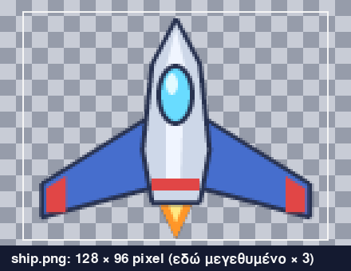
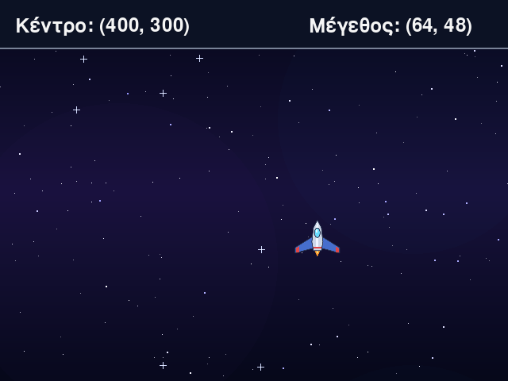
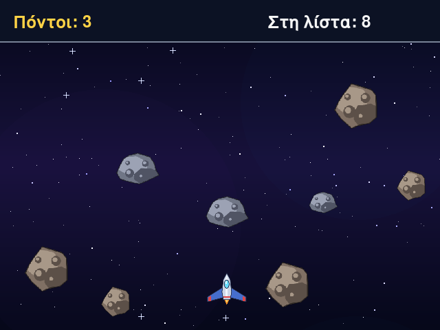
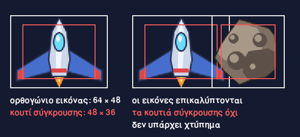
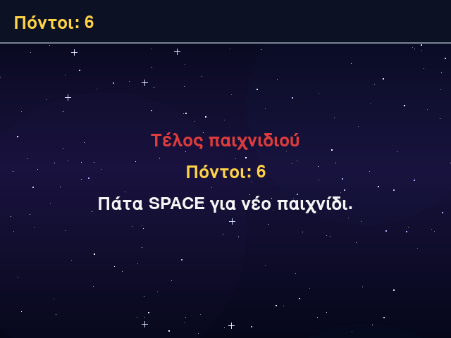
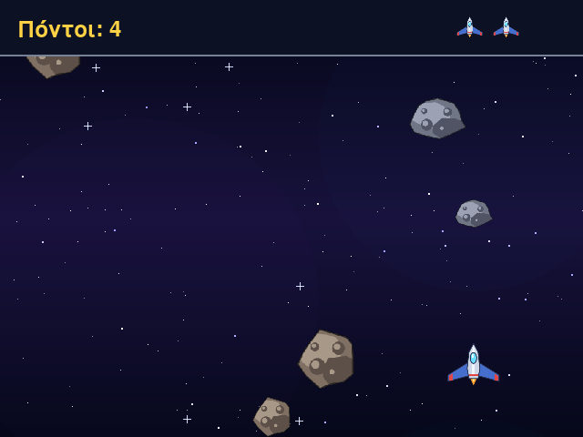

Μάθημα 11: Διαστημική αποφυγή¶
Παιχνίδι: πιλοτάρεις ένα διαστημόπλοιο με το ποντίκι και αποφεύγεις αστεροειδείς που πέφτουν· κάθε αστεροειδής που περνά σου δίνει έναν πόντο και κάθε χτύπημα σου κοστίζει μία από τις τρεις ζωές σου
Διάρκεια: 4 κύκλοι × (περίπου 45′ εργασία + 15′ διάλειμμα)
Φύλλο εργασίας
Αυτή η σελίδα εξηγεί τις έννοιες. Οι ασκήσεις και οι οδηγίες για κάθε κύκλο βρίσκονται στο Φύλλο εργασίας 11. Δούλεψε με τις δύο σελίδες ανοιχτές.
Αρχεία εργαστηρίου¶
| Αρχείο | Κύκλος |
|---|---|
| make_assets.py | πριν από τον Κύκλο 1 (φτιάχνει τις εικόνες του παιχνιδιού) |
| 01-images.py | 1 |
| 02-asteroids.py | 2 |
| 03-collisions.py | 3 |
| 04-final.py | 4 |
| exercises.py | 1–4 (οι ασκήσεις «γράψε εσύ») |
| check_exercises.py | 1–4 (αυτοέλεγχος των ασκήσεων) |
Κατέβασε και τα επτά αρχεία στον ίδιο φάκελο.
Η αποστολή¶
Στο παράθυρο υπάρχει ένα διαστημόπλοιο και το κινείς με το ποντίκι, σε όλο το παράθυρο κάτω από τη γραμμή του HUD. Αστεροειδείς πέφτουν από ψηλά, σε τυχαίες θέσεις, με τυχαίο μέγεθος και τυχαία ταχύτητα. Κάθε αστεροειδής που βγαίνει από το κάτω μέρος του παραθύρου σου δίνει έναν πόντο. Αν ένας αστεροειδής χτυπήσει το διαστημόπλοιο, εξαφανίζεται και χάνεις μία ζωή από τις τρεις που έχεις. Όσο μαζεύεις πόντους, οι αστεροειδείς έρχονται πιο συχνά και πιο γρήγορα. Όταν χάσεις και τις τρεις ζωές, το παιχνίδι τελειώνει και το SPACE ξεκινά νέο παιχνίδι.
Στα Μαθήματα 7 έως 10 ζωγράφιζες τα πάντα με σχήματα: ορθογώνια, κύκλους, πολύγωνα. Τα παιχνίδια που παίζεις έχουν εικόνες, που τις έφτιαξε ένας καλλιτέχνης και είναι αποθηκευμένες σε αρχεία. Σήμερα οι εικόνες μπαίνουν και στο δικό σου παιχνίδι. Χρειάζονται πέντε πράγματα:
- Εικόνες από αρχεία: φόρτωση, προσαρμογή και σχεδίαση (
pygame.image.load,convert_alpha,pygame.transform.scale). - Το ορθογώνιο μιας εικόνας: η μέθοδος
get_rect, η θέση και το μέγεθος, και το κράτημα μέσα στην περιοχή παιχνιδιού. - Το ποντίκι ως χειριστήριο: το συμβάν
MOUSEMOTION. - Sprites: αντικείμενα με εικόνα, θέση και συμπεριφορά (οι κλάσεις
ShipκαιAsteroid). - Σύγκρουση εικόνων: κουτιά σύγκρουσης (
inflate,colliderect) για αντικείμενα με εικόνα.
Σε κάθε κύκλο γράφεις δικό σου κώδικα με αυτοέλεγχο: μια συνάρτηση, μια κλάση ή δύο μικρές συναρτήσεις. Στο τέλος το παιχνίδι μπορεί να τρέξει με τον δικό σου κώδικα.
Στο τέλος θα μπορείς¶
- να φορτώνεις μια εικόνα από αρχείο, να την προσαρμόζεις στην οθόνη με την
convertή τηνconvert_alphaκαι να τη ζωγραφίζεις με τηνblit. - να αλλάζεις το μέγεθος μιας εικόνας με την
pygame.transform.scale, χωρίς να τη στρεβλώνεις. - να παίρνεις το ορθογώνιο μιας εικόνας με την
get_rect, να το τοποθετείς και να το κρατάς μέσα στην περιοχή παιχνιδιού με τηνclamp_ip. - να διαβάζεις το συμβάν
MOUSEMOTIONκαι να κινείς ένα αντικείμενο με το ποντίκι. - να φτιάχνεις sprites ως κλάσεις με εικόνα και ορθογώνιο, και να εξηγείς γιατί η ακριβής θέση κρατιέται χωριστά από το
rect. - να φτιάχνεις κουτιά σύγκρουσης με την
inflateκαι να ελέγχεις επικάλυψη με τηνcolliderect. - να ζωγραφίζεις με σωστή σειρά: φόντο, αστεροειδείς, διαστημόπλοιο, HUD.
- να αποφασίζεις το τέλος του παιχνιδιού και τη δυσκολία, με μια συνάρτηση που επιστρέφει δύο τιμές.
Πριν αρχίσεις¶
- Μέσα στον φάκελο
python-gamesφτιάξε τον φάκελο11-space-dodge. - Κατέβασε εκεί τα επτά αρχεία του πίνακα, με τα ακριβή τους ονόματα.
- Άνοιξε τον φάκελο στο VS Code και άνοιξε τερματικό.
- Έλεγξε ότι η pygame-ce είναι εγκατεστημένη, όπως στο Μάθημα 7:
python -c "import pygame; print(pygame.version.ver)". - Τρέξε μία φορά το
python make_assets.py. Το πρόγραμμα φτιάχνει τον φάκελοassetsμε τέσσερις εικόνες και γράφει τέσσερις γραμμές «Γράφτηκε το …». - Φτιάξε ένα κενό αρχείο
sandbox.pyγια δοκιμές.
Ο κύκλος εργασίας
Πρόβλεψη → εκτέλεση → σύγκριση → εξήγηση. Σήμερα η πρόβλεψη είναι συχνά ένα ορθογώνιο: «πού είναι η πάνω αριστερή γωνία;», «πόσο πλατύ είναι;». Γράψε τους αριθμούς στο χαρτί πριν τρέξεις τον κώδικα.
Ο φάκελος εργασίας
Το πρόγραμμα βρίσκει τις εικόνες με σχετική διαδρομή (assets/ship.png), δηλαδή από τον τρέχοντα φάκελο του τερματικού,
όπως βρισκόταν το αρχείο κειμένου στο Μάθημα 5. Τρέχε πάντα το python 01-images.py και τα επόμενα από τον φάκελο όπου
βρίσκεται ο φάκελος assets. Αν δεις FileNotFoundError, διάβασε το μήνυμα: γράφει σε ποιον φάκελο έψαξε η Python.
Ο δείκτης του ποντικιού κρύβεται
Πάνω στο παράθυρο του παιχνιδιού ο δείκτης του ποντικιού δεν φαίνεται, γιατί τη θέση του παίρνει το διαστημόπλοιο. Για να κλείσεις το παιχνίδι, πάτα Esc.
Κύκλος 1 — Εικόνες και ποντίκι¶
Σε αυτόν τον κύκλο φορτώνεις το φόντο και το διαστημόπλοιο, και το διαστημόπλοιο ακολουθεί το ποντίκι μέσα στο παράθυρο.
1.1 Εικόνες από αρχεία¶
Μια εικόνα είναι ένας πίνακας από pixel: γραμμές και στήλες από μικρά χρωματιστά τετράγωνα. Κάθε pixel έχει τρεις αριθμούς, για το κόκκινο, το πράσινο και το μπλε (RGB, όπως στο Μάθημα 7). Οι εικόνες που αποθηκεύονται σε αρχείο PNG έχουν συχνά και έναν τέταρτο αριθμό, την αδιαφάνεια (alpha): το 255 σημαίνει ότι το pixel καλύπτει πλήρως ό,τι υπάρχει πίσω του, και το 0 ότι είναι διάφανο και δεν φαίνεται καθόλου.
Αυτό μας χρειάζεται, γιατί ένα διαστημόπλοιο δεν είναι ορθογώνιο, αλλά η εικόνα του είναι. Τα pixel γύρω από το σχήμα του είναι διάφανα. Όταν η εικόνα ζωγραφίζεται πάνω από το φόντο, φαίνεται μόνο το ίδιο το διαστημόπλοιο.

Οι τέσσερις εικόνες του παιχνιδιού είναι στον φάκελο assets:
| Αρχείο | Μέγεθος (πλάτος × ύψος) | Διαφάνεια | Τι δείχνει |
|---|---|---|---|
background.png |
640 × 480 | όχι | το διάστημα, με αστέρια |
ship.png |
128 × 96 | ναι | το διαστημόπλοιο, με τη μύτη προς τα πάνω |
asteroid-1.png |
96 × 96 | ναι | ένας στρογγυλός αστεροειδής |
asteroid-2.png |
120 × 84 | ναι | ένας επιμήκης αστεροειδής |
Τις εικόνες τις φτιάχνει με κώδικα το πρόγραμμα make_assets.py: ζωγραφίζει με σχήματα, όπως στο Μάθημα 7, και αποθηκεύει το
αποτέλεσμα σε αρχεία PNG. Δεν χρειάζεται να το καταλάβεις τώρα· διάβασέ το όταν τελειώσεις. Αν θέλεις άλλες εικόνες, βάλε στον
φάκελο assets δικά σου αρχεία με τα ίδια ονόματα (ενότητα 4.8).
1.2 Φόρτωση: pygame.image.load¶
Η pygame.image.load διαβάζει ένα αρχείο και επιστρέφει μια επιφάνεια (Surface), δηλαδή το ίδιο είδος αντικειμένου που
επιστρέφει η font.render για τα κείμενα. Τη ζωγραφίζεις όπως ήδη ξέρεις, με την blit.
- Το όρισμα είναι η διαδρομή του αρχείου, ως κείμενο. Η
"assets/ship.png"λέει: μέσα στον φάκελοassets, το αρχείοship.png. Είναι σχετική διαδρομή, από τον τρέχοντα φάκελο, όπως στο Μάθημα 5. - Αν το αρχείο δεν βρεθεί, η Python δίνει
FileNotFoundErrorκαι γράφει και τον φάκελο όπου έψαξε:FileNotFoundError: No file 'assets/ship.png' found in working directory 'C:\Users\…\python-games'.Συνήθως τρέχεις το πρόγραμμα από λάθος φάκελο, ή δεν έτρεξες ακόμη τοmake_assets.py. - Η εικόνα φορτώνεται μία φορά, πριν από τον βρόχο. Η ανάγνωση ενός αρχείου είναι αργή. Αν την έβαζες μέσα στον βρόχο, θα διάβαζες το ίδιο αρχείο 60 φορές το δευτερόλεπτο.
- Στα Windows το όνομα ενός αρχείου δεν ξεχωρίζει κεφαλαία και πεζά, σε άλλα συστήματα όμως ξεχωρίζει. Γράφε τα ονόματα ακριβώς όπως είναι.
1.3 Η convert και η convert_alpha¶
Η εικόνα που φορτώνει η load έχει τα pixel της όπως τα έγραψε το αρχείο, ενώ η οθόνη κρατά τα δικά της pixel με άλλη διάταξη.
Αν δεν κάνεις κάτι, σε κάθε blit η pygame μετατρέπει τα pixel ένα προς ένα. Οι μέθοδοι convert και convert_alpha κάνουν
τη μετατροπή μία φορά και επιστρέφουν νέα εικόνα, με τη διάταξη της οθόνης:
| Μέθοδος | Πότε | Στο παιχνίδι μας |
|---|---|---|
convert() |
η εικόνα δεν έχει διαφάνεια | το φόντο |
convert_alpha() |
η εικόνα έχει διαφάνεια | το διαστημόπλοιο και οι αστεροειδείς |
def load_image(path):
"""Φορτώνει μια εικόνα με διαφάνεια από το αρχείο path, έτοιμη για γρήγορη σχεδίαση."""
return pygame.image.load(path).convert_alpha()
- Η εικόνα δείχνει ακριβώς ίδια πριν και μετά. Η διαφορά είναι στην ταχύτητα. Σε δοκιμή που έγινε για αυτό το μάθημα, μια
εικόνα 64 × 64 με διαφάνεια σχεδιάστηκε πάνω από 10 φορές πιο γρήγορα μετά την
convert_alpha, και ένα φόντο χωρίς διαφάνεια πάνω από 2 φορές πιο γρήγορα μετά τηνconvert. Με πολλά sprites σε κάθε καρέ, η διαφορά φαίνεται. - Οι δύο μέθοδοι θέλουν να υπάρχει ήδη παράθυρο, γι' αυτό καλούνται μετά την
pygame.display.set_mode. Αλλιώς η pygame δίνει το σφάλμαpygame.error: No convert format has been set, try display.set_mode() or Window.get_surface(). - Οι μέθοδοι δεν αλλάζουν την εικόνα που τις καλεί, αλλά επιστρέφουν νέα. Γι' αυτό η
load_imageγράφειreturn pygame.image.load(path).convert_alpha(): ηconvert_alphaδουλεύει πάνω σε ό,τι επιστρέφει ηload.
1.4 Μέγεθος και αναλογίες: transform.scale¶
Το ship.png είναι 128 × 96 pixel, πολύ μεγάλο για το παράθυρό μας. Η pygame.transform.scale(image, (πλάτος, ύψος))
επιστρέφει νέα εικόνα με το μέγεθος που ζητάς. Η αρχική δεν αλλάζει, γι' αυτό πρέπει να κρατήσεις το αποτέλεσμα. Το
μέγεθος μιας εικόνας το βρίσκεις με τις μεθόδους get_width() και get_height(), ή μαζί με την get_size().
Αν δώσεις τυχαίο πλάτος και ύψος, η εικόνα στρεβλώνεται. Για να μείνει όπως είναι, το πλάτος και το ύψος πρέπει να αλλάζουν με τον ίδιο λόγο. Ζητάμε το νέο πλάτος και υπολογίζουμε το ύψος:
νέο ύψος = ύψος × νέο πλάτος / πλάτος
Το αποτέλεσμα στρογγυλοποιείται στον πλησιέστερο ακέραιο με τη round, γιατί το μέγεθος μετριέται σε ολόκληρα pixel.
def fit_size(width, height, new_width):
"""Το μέγεθος (πλάτος, ύψος) μιας εικόνας με πλάτος new_width, όταν διατηρεί τις αναλογίες της."""
return new_width, round(height * new_width / width)
def resize(image, new_width):
"""Επιστρέφει νέα εικόνα με πλάτος new_width, χωρίς να παραμορφώνεται. Η αρχική εικόνα δεν αλλάζει."""
size = fit_size(image.get_width(), image.get_height(), new_width)
return pygame.transform.scale(image, size)
| Εικόνα | Αρχικό μέγεθος | Νέο πλάτος | Ακριβές ύψος | Νέο μέγεθος |
|---|---|---|---|---|
ship.png |
128 × 96 | 64 | 48 | 64 × 48 |
ship.png |
128 × 96 | 32 | 24 | 32 × 24 |
asteroid-1.png |
96 × 96 | 72 | 72 | 72 × 72 |
asteroid-2.png |
120 × 84 | 48 | 33,6 | 48 × 34 |
asteroid-2.png |
120 × 84 | 72 | 50,4 | 72 × 50 |
- Η
fit_sizeκάνει τον υπολογισμό, και ηresizeτη χρησιμοποιεί και καλεί τηscale. Τηfit_sizeτη γράφεις και εσύ στοexercises.py, στο τέλος του κύκλου. - Μικραίνουμε τις εικόνες μία φορά, όταν ξεκινά το πρόγραμμα, και όχι σε κάθε καρέ.
- Έτσι το παιχνίδι δουλεύει με εικόνες οποιουδήποτε μεγέθους: όποια εικόνα κι αν βάλεις στο
assets, ηresizeτη φέρνει στο πλάτος που θέλουμε.
1.5 Το ορθογώνιο της εικόνας: get_rect¶
Μια επιφάνεια ξέρει το μέγεθός της, αλλά όχι πού βρίσκεται. Για τη θέση χρειαζόμαστε ένα Rect, όπως στο Μάθημα 7. Η
μέθοδος get_rect δίνει ένα Rect με το μέγεθος της εικόνας:
- Χωρίς ορίσματα,
ship_image.get_rect(), το ορθογώνιο έχει πάνω αριστερή γωνία το(0, 0). - Με το
center=(x, y)το ορθογώνιο τοποθετείται έτσι ώστε το κέντρο του να είναι στο(x, y). Το ίδιο κάνεις με τα κείμενα, από το Μάθημα 7. Δέχεται και άλλες ιδιότητες τουRect, όπωςtopleft=(x, y)ήmidbottom=(x, y).
Για το διαστημόπλοιο 64 × 48 με κέντρο στο (320, 410), το ship_rect έχει αυτές τις ιδιότητες:
| Ιδιότητα | Τιμή |
|---|---|
ship_rect.center |
(320, 410) |
ship_rect.size |
(64, 48) |
ship_rect.topleft |
(288, 386) |
ship_rect.left και ship_rect.right |
288 και 352 |
ship_rect.top και ship_rect.bottom |
386 και 434 |
Για να ζωγραφίσεις το διαστημόπλοιο γράφεις screen.blit(ship_image, ship_rect). Η blit δέχεται ως θέση και ένα Rect: βάζει
την εικόνα με την πάνω αριστερή γωνία του. Άρα, για να μετακινήσεις την εικόνα, αρκεί να αλλάξεις το ship_rect.center. Στην
ενότητα 2.3 θα δούμε ότι το Rect κρατά μόνο ακέραιους αριθμούς, και τι σημαίνει αυτό.
1.6 Το ποντίκι: MOUSEMOTION¶
Στο Μάθημα 7 το κλικ ήταν το συμβάν MOUSEBUTTONDOWN. Η κίνηση του ποντικιού έχει δικό της συμβάν, το MOUSEMOTION. Έρχεται
κάθε φορά που το ποντίκι αλλάζει θέση πάνω από το παράθυρο:
for event in pygame.event.get():
if event.type == pygame.QUIT:
running = False
elif event.type == pygame.KEYDOWN and event.key == pygame.K_ESCAPE:
running = False
elif event.type == pygame.MOUSEMOTION:
ship_rect.center = event.pos
ship_rect.clamp_ip(PLAY_AREA)
- Το
event.posείναι η νέα θέση του ποντικιού, μια πλειάδα(x, y), όπως στο κλικ. Το συμβάν έχει και δύο ακόμη ιδιότητες: τοevent.rel, πόσο κινήθηκε το ποντίκι από το προηγούμενο συμβάν, και τοevent.buttons, ποια κουμπιά είναι πατημένα. Εμείς χρησιμοποιούμε μόνο τοpos. - Αν κουνήσεις γρήγορα το ποντίκι, μέσα σε ένα καρέ μπορεί να έρθουν πολλά συμβάντα. Ο
forτα διαβάζει όλα με τη σειρά, και το διαστημόπλοιο καταλήγει στην τελευταία θέση. - Όταν το ποντίκι δεν κινείται ή βγει από το παράθυρο, δεν έρχονται συμβάντα. Το διαστημόπλοιο μένει εκεί που ήταν.
- Υπάρχει και η
pygame.mouse.get_pos(), που δίνει τη θέση του ποντικιού την ώρα που τη ρωτάς, χωρίς συμβάν. Εμείς χρησιμοποιούμε το συμβάν, όπως κάναμε με το κλικ. - Η
pygame.mouse.set_visible(False)κρύβει τον δείκτη του ποντικιού πάνω από το παράθυρο. Τη γράφουμε μία φορά, πριν από τον βρόχο. Το διαστημόπλοιο παίρνει τη θέση του δείκτη.
1.7 Μέσα στην περιοχή παιχνιδιού: clamp_ip¶
Αν βάζαμε το κέντρο του διαστημόπλοιου ακριβώς στο ποντίκι, το μισό διαστημόπλοιο θα έβγαινε από το παράθυρο όταν πηγαίνεις στην άκρη, και θα περνούσε πάνω από το HUD. Θέλουμε ολόκληρο το ορθογώνιο να μένει μέσα στην περιοχή παιχνιδιού, που είναι όλο το παράθυρο κάτω από τη γραμμή του HUD:
Η περιοχή είναι το Rect(0, 60, 640, 420). Η μέθοδος clamp_ip(PLAY_AREA) μετακινεί το ορθογώνιο όσο χρειάζεται, για να χωρέσει
μέσα στην περιοχή. Αν ήδη χωρά, δεν κάνει τίποτα. Το _ip σημαίνει «επιτόπου» (in place): η μέθοδος αλλάζει το ίδιο το
ορθογώνιο και δεν επιστρέφει νέο. Η clamp, χωρίς το _ip, επιστρέφει νέο ορθογώνιο και αφήνει το αρχικό όπως ήταν.
Το ίδιο κάνεις στα Μαθήματα 4, 9 και 10 με το max(κάτω όριο, min(τιμή, πάνω όριο)), τώρα και στους δύο άξονες μαζί. Το κέντρο
του διαστημόπλοιου μένει από 32 έως 608 στον άξονα x (32 είναι το μισό πλάτος) και από 84 έως 456 στον άξονα y (84 = 60 + 24
και 456 = 480 − 24, όπου 24 είναι το μισό ύψος).
| Θέση του ποντικιού | Κέντρο του διαστημόπλοιου | Γιατί |
|---|---|---|
(100, 200) |
(100, 200) |
χωρά, δεν αλλάζει |
(0, 0) |
(32, 84) |
πάνω αριστερά: μένει μέσα στο παράθυρο και κάτω από το HUD |
(639, 479) |
(608, 456) |
κάτω δεξιά |
(320, 59) |
(320, 84) |
πάνω από το HUD |
(31, 300) |
(32, 300) |
ένα pixel πολύ αριστερά |
(609, 300) |
(608, 300) |
ένα pixel πολύ δεξιά |
1.8 Συνηθισμένα λάθη¶
| Τι βλέπεις | Πιθανή αιτία |
|---|---|
FileNotFoundError: No file 'assets/ship.png' found in working directory '…' |
τρέχεις το πρόγραμμα από λάθος φάκελο, ή δεν έτρεξες το make_assets.py, ή έγραψες λάθος το όνομα του αρχείου |
pygame.error: No convert format has been set, try display.set_mode() or Window.get_surface(). |
η convert ή η convert_alpha καλείται πριν από τη set_mode |
| Το διαστημόπλοιο είναι τεράστιο | η scale καλείται αλλά το αποτέλεσμά της δεν κρατιέται: pygame.transform.scale(image, size) χωρίς image = … |
| Η εικόνα φαίνεται πατημένη ή τεντωμένη | δόθηκε μέγεθος με άλλες αναλογίες (π.χ. (64, 64) για εικόνα 128 × 96) αντί για το αποτέλεσμα της fit_size |
AttributeError: 'pygame.surface.Surface' object has no attribute 'rect' |
μια επιφάνεια δεν έχει ιδιότητα rect· το ορθογώνιο το δίνει η μέθοδος get_rect |
ValueError: Cannot scale to negative size |
αρνητικό πλάτος ή ύψος στη scale |
| Το διαστημόπλοιο δεν κινείται | λείπει το elif event.type == pygame.MOUSEMOTION:, ή το ποντίκι είναι έξω από το παράθυρο |
| Το διαστημόπλοιο περνά πάνω από το HUD ή βγαίνει από το παράθυρο | λείπει η clamp_ip, ή η PLAY_AREA δεν είναι σωστή |
Στάδιο 1 — Εικόνες και ποντίκι¶
Άνοιξε το 01-images.py. Συμπλήρωσε τα οκτώ κενά και τρέξε το. Το διαστημόπλοιο ακολουθεί το ποντίκι μέσα στην περιοχή κάτω από
τη γραμμή του HUD. Η ένδειξη «Κέντρο» δείχνει πού είναι το κέντρο του ορθογωνίου του, και η ένδειξη «Μέγεθος» πόσο μεγάλο είναι.

"""Στάδιο 1 — Εικόνες: φόντο και διαστημόπλοιο που ακολουθεί το ποντίκι.
Συμπλήρωσε τα οκτώ κενά (____). Οι εικόνες φορτώνονται μία φορά, πριν από τον βρόχο. Κάθε φορά που κινείται το ποντίκι, το
κέντρο του διαστημόπλοιου πηγαίνει εκεί, μέσα στα όρια της περιοχής παιχνιδιού. Πρώτα τρέξε το make_assets.py, για να
φτιαχτεί ο φάκελος assets.
"""
import pygame
pygame.init()
WIDTH = 640
HEIGHT = 480
HUD_HEIGHT = 60
SHIP_WIDTH = 64 # το πλάτος του διαστημόπλοιου στην οθόνη, σε pixel
HUD_COLOR = (12, 18, 36)
GREY = (120, 130, 150)
WHITE = (245, 245, 245)
screen = pygame.display.set_mode((WIDTH, HEIGHT))
pygame.display.set_caption("Διαστημική αποφυγή")
font = pygame.font.Font(None, 36)
clock = pygame.time.Clock()
# Η περιοχή όπου κινείται το διαστημόπλοιο: όλο το παράθυρο κάτω από το HUD
PLAY_AREA = pygame.Rect(0, HUD_HEIGHT, WIDTH, HEIGHT - HUD_HEIGHT)
def fit_size(width, height, new_width):
"""Το μέγεθος (πλάτος, ύψος) μιας εικόνας με πλάτος new_width, όταν διατηρεί τις αναλογίες της."""
# TODO 1: το ύψος αλλάζει με τον ίδιο λόγο που αλλάζει το πλάτος: νέο πλάτος προς παλιό
return new_width, round(height * ____ / width)
def load_image(path):
"""Φορτώνει μια εικόνα με διαφάνεια από το αρχείο path, έτοιμη για γρήγορη σχεδίαση."""
# TODO 2: η μέθοδος που προσαρμόζει στην οθόνη μια εικόνα με διαφάνεια
return pygame.image.load(path).____()
def resize(image, new_width):
"""Επιστρέφει νέα εικόνα με πλάτος new_width, χωρίς να παραμορφώνεται. Η αρχική εικόνα δεν αλλάζει."""
size = fit_size(image.get_width(), image.get_height(), new_width)
# TODO 3: η συνάρτηση που φτιάχνει νέα εικόνα με άλλο μέγεθος
return pygame.transform.____(image, size)
def draw_text(surface, font, text, color, position):
"""Ζωγραφίζει το κείμενο, με την πάνω αριστερή γωνία του στο position."""
image = font.render(text, True, color)
surface.blit(image, position)
# Οι εικόνες φορτώνονται μία φορά, πριν από τον βρόχο
background = pygame.image.load("assets/background.png").convert()
ship_image = resize(load_image("assets/ship.png"), SHIP_WIDTH)
# TODO 4: η μέθοδος που δίνει το ορθογώνιο μιας εικόνας
ship_rect = ship_image.____(center=(WIDTH // 2, HEIGHT - 70))
pygame.mouse.set_visible(False) # το διαστημόπλοιο παίρνει τη θέση του δείκτη
running = True
while running:
clock.tick(60)
for event in pygame.event.get():
if event.type == pygame.QUIT:
running = False
elif event.type == pygame.KEYDOWN and event.key == pygame.K_ESCAPE:
running = False
# TODO 5: το συμβάν που έρχεται όταν κινείται το ποντίκι
elif event.type == pygame.____:
# TODO 6: η θέση του ποντικιού, όπως στο κλικ του Μαθήματος 7
ship_rect.center = event.____
# TODO 7: κράτα το ορθογώνιο μέσα στην PLAY_AREA (μία γραμμή)
____
screen.blit(background, (0, 0))
# TODO 8: ζωγράφισε το διαστημόπλοιο στη θέση του ορθογωνίου του (μία γραμμή)
____
pygame.draw.rect(screen, HUD_COLOR, (0, 0, WIDTH, HUD_HEIGHT))
pygame.draw.line(screen, GREY, (0, HUD_HEIGHT), (WIDTH, HUD_HEIGHT), 2)
draw_text(screen, font, f"Κέντρο: {ship_rect.center}", WHITE, (20, 20))
draw_text(screen, font, f"Μέγεθος: {ship_rect.size}", WHITE, (WIDTH - 250, 20))
pygame.display.flip()
pygame.quit()
Συνέχισε στο Φύλλο εργασίας, Κύκλος 1.
Κύκλος 2 — Sprites και αστεροειδείς¶
Σε αυτόν τον κύκλο το διαστημόπλοιο και οι αστεροειδείς γίνονται αντικείμενα κλάσεων με εικόνα. Ένας χρονιστής φτιάχνει αστεροειδείς, και όσοι βγουν από το παράθυρο δίνουν πόντους.
2.1 Τι είναι ένα sprite¶
Στο παιχνίδι υπάρχουν αντικείμενα που έχουν εικόνα, θέση και συμπεριφορά: το διαστημόπλοιο και κάθε αστεροειδής. Τα αντικείμενα αυτού του είδους τα λέμε sprites (η λέξη δεν μεταφράζεται). Για εμάς ένα sprite είναι απλώς ένα αντικείμενο μιας κλάσης, όπως στα Μαθήματα 6, 9 και 10, με δύο ιδιότητες:
| Ιδιότητα | Τι κρατά |
|---|---|
image |
η εικόνα του (μια επιφάνεια), έτοιμη και στο σωστό μέγεθος |
rect |
το ορθογώνιο της εικόνας: η θέση και το μέγεθός της |
Η pygame έχει και δική της έτοιμη κλάση, την pygame.sprite.Sprite, που όμως χρειάζεται τεχνικές της Python που δεν θα δούμε.
Εμείς φτιάχνουμε τα δικά μας sprites με όσα ξέρεις ήδη.
Επειδή και τα δύο sprites έχουν image και rect, μία συνάρτηση τα ζωγραφίζει και τα δύο:
def draw_sprite(surface, sprite):
"""Ζωγραφίζει την εικόνα ενός sprite (διαστημόπλοιου ή αστεροειδή) στη θέση του ορθογωνίου του."""
surface.blit(sprite.image, sprite.rect)
Η συνάρτηση δεν ξέρει αν το sprite είναι διαστημόπλοιο ή αστεροειδής. Της αρκεί το αντικείμενο να έχει τις ιδιότητες image
και rect.
2.2 Η κλάση Ship¶
class Ship:
"""Το διαστημόπλοιο: η εικόνα του και το ορθογώνιό της. Ακολουθεί το ποντίκι."""
def __init__(self, image, x, y):
self.image = image
self.rect = image.get_rect(center=(x, y))
def move_to(self, x, y):
"""Βάζει το κέντρο του διαστημόπλοιου στο (x, y) και το κρατά μέσα στην περιοχή παιχνιδιού."""
self.rect.center = (x, y)
self.rect.clamp_ip(PLAY_AREA)
| Ιδιότητα | Τι κρατά |
|---|---|
image |
η εικόνα του διαστημόπλοιου, 64 × 48 pixel |
rect |
το ορθογώνιο της εικόνας, που στην αρχή έχει κέντρο το (x, y) που δόθηκε |
| Μέθοδος | Τι κάνει |
|---|---|
move_to(x, y) |
βάζει το κέντρο του ορθογωνίου στο (x, y) και το κρατά μέσα στην PLAY_AREA |
- Η
__init__παίρνει την εικόνα ως παράμετρο. Το διαστημόπλοιο δεν διαβάζει μόνο του το αρχείο: το φορτώνουμε μία φορά, έξω από την κλάση, και το δίνουμε. Έτσι δεν διαβάζεται αρχείο κάθε φορά που φτιάχνεται ένα αντικείμενο. - Η
move_toκάνει ό,τι κάναμε στο Στάδιο 1 με τοship_rect, αλλά πια μέσα στο αντικείμενο. Στον βρόχο γράφουμεship.move_to(event.pos[0], event.pos[1]), με τον ίδιο τρόπο που γράφαμεevent.pos[0]για το κλικ στο Μάθημα 10. - Η
PLAY_AREAείναι σταθερά του προγράμματος: η μέθοδος τη διαβάζει, όπως διαβάζει και κάθε συνάρτηση τις σταθερές.
2.3 Η κλάση Asteroid: ακριβής θέση και ορθογώνιο¶
Ένας αστεροειδής πέφτει με ταχύτητα σε pixel το δευτερόλεπτο. Σε κάθε καρέ μετακινείται κατά speed * dt, που συνήθως είναι
δεκαδικός αριθμός: για ταχύτητα 150 και καρέ των 0,016 δευτερολέπτων, 150 * 0.016 είναι 2,4 pixel. Το Rect όμως κρατά
μόνο ακέραιους αριθμούς, και όταν του δώσεις δεκαδικό, κόβει τα δεκαδικά. Δες τι γίνεται αν μετακινούμε το ορθογώνιο απευθείας,
με rect.centery += 150 * 0.016, αρχίζοντας από y = 100:
| Καρέ | Ακριβές y | Ορθογώνιο με round |
Ορθογώνιο με += |
|---|---|---|---|
| 0 | 100,0 | 100 | 100 |
| 1 | 102,4 | 102 | 102 |
| 2 | 104,8 | 105 | 104 |
| 3 | 107,2 | 107 | 106 |
| 4 | 109,6 | 110 | 108 |
| 5 | 112,0 | 112 | 110 |
Το ορθογώνιο που μετακινείται με += χάνει τα 0,4 pixel σε κάθε καρέ. Ύστερα από πέντε καρέ είναι 2 pixel πίσω, και ο
αστεροειδής φαίνεται να πέφτει πιο αργά από όσο ορίσαμε. Η λύση είναι να κρατά το αντικείμενο τη θέση του κέντρου του με
δεκαδικά, στα x και y, και να ενημερώνουμε το rect από εκεί, στρογγυλοποιώντας με τη round:
class Asteroid:
"""Ένας αστεροειδής που πέφτει: η εικόνα του, η ακριβής θέση του κέντρου του (x, y) και η ταχύτητά του (pixel το δευτερόλεπτο)."""
def __init__(self, image, x, y, speed):
self.image = image
self.x = x
self.y = y
self.speed = speed
self.rect = image.get_rect(center=(round(x), round(y)))
def update(self, dt):
"""Ο αστεροειδής πέφτει, και το ορθογώνιό του ακολουθεί την ακριβή θέση."""
self.y += self.speed * dt
self.rect.center = (round(self.x), round(self.y))
| Ιδιότητα | Τι κρατά |
|---|---|
image |
η εικόνα του αστεροειδή (μία από τις τέσσερις) |
x, y |
η ακριβής θέση του κέντρου του, με δεκαδικά· το y μεγαλώνει καθώς πέφτει |
speed |
η ταχύτητα πτώσης, σε pixel το δευτερόλεπτο |
rect |
το ορθογώνιο της εικόνας, με κέντρο το (x, y) στρογγυλοποιημένο: για σχεδίαση και συγκρούσεις |
| Μέθοδος | Τι κάνει |
|---|---|
update(dt) |
αυξάνει το y κατά speed * dt και ξαναβάζει το κέντρο του rect στην ακριβή θέση, στρογγυλοποιημένη |
- Τα
xκαιyείναι οι αριθμοί που αλλάζουν και μένουν ακριβείς. Τοrectείναι ένα «αντίγραφο» με ακέραιους, που ξαναφτιάχνεται από αυτά σε κάθε καρέ. - Ο αστεροειδής πέφτει κατακόρυφα: το
xδεν αλλάζει ποτέ. - Παράδειγμα: για
Asteroid(image, 100.6, 50.4, 150)τοrect.centerείναι(101, 50), γιατί ηround(100.6)είναι 101 και ηround(50.4)είναι 50. - Αυτός είναι ένας κανόνας που ισχύει σε κάθε παιχνίδι: ό,τι κινείται με ταχύτητα και χρόνο κρατά τη θέση του σε δεκαδικούς
αριθμούς. Το
Rectχρησιμεύει για τη σχεδίαση και τον έλεγχο συγκρούσεων.
2.4 Τέσσερις εικόνες από δύο αρχεία¶
Θέλουμε αστεροειδείς δύο σχημάτων και δύο μεγεθών. Δεν χρειάζονται τέσσερα αρχεία: από κάθε αρχείο φτιάχνουμε δύο εικόνες, με
διαφορετικό πλάτος. Οι σταθερές είναι ASTEROID_FILES = ("assets/asteroid-1.png", "assets/asteroid-2.png") και
ASTEROID_WIDTHS = (48, 72), και ο κώδικας είναι δύο φωλιασμένοι βρόχοι, όπως στο Μάθημα 2:
ASTEROID_IMAGES = []
for path in ASTEROID_FILES:
original = load_image(path)
for width in ASTEROID_WIDTHS:
ASTEROID_IMAGES.append(resize(original, width))
| Θέση στη λίστα | Αρχείο | Πλάτος | Μέγεθος |
|---|---|---|---|
| 0 | asteroid-1.png |
48 | 48 × 48 |
| 1 | asteroid-1.png |
72 | 72 × 72 |
| 2 | asteroid-2.png |
48 | 48 × 34 |
| 3 | asteroid-2.png |
72 | 72 × 50 |
- Ο εξωτερικός βρόχος διαβάζει κάθε αρχείο μία φορά. Ο εσωτερικός φτιάχνει από αυτό δύο μεγέθη.
- Η
resizeδεν αλλάζει τοoriginal, γι' αυτό η ίδια εικόνα χρησιμεύει και για τα δύο μεγέθη. - Η λίστα έχει τέσσερις εικόνες, και η
random.choiceθα διαλέγει από αυτές.
2.5 Ένας νέος αστεροειδής¶
def new_asteroid(top_speed):
"""Φτιάχνει έναν νέο αστεροειδή: τυχαία εικόνα, τυχαίο x και τυχαία ταχύτητα, ακριβώς πάνω από το HUD."""
image = random.choice(ASTEROID_IMAGES)
half = image.get_width() // 2
x = random.randint(half, WIDTH - half)
speed = random.randint(MIN_SPEED, top_speed)
return Asteroid(image, x, HUD_HEIGHT - image.get_height() // 2, speed)
- Η
random.choice(λίστα)επιστρέφει ένα τυχαίο στοιχείο της λίστας, όπως στο Μάθημα 2. - Το
halfείναι το μισό πλάτος της εικόνας. Για να μη βγαίνει ο αστεροειδής έξω από το παράθυρο στα πλάγια, το κέντρο του διαλέγεται από τοhalfέως τοWIDTH - half. - Το αρχικό
y,HUD_HEIGHT - image.get_height() // 2, βάζει το κάτω άκρο του ορθογωνίου του ακριβώς στοHUD_HEIGHT: ο αστεροειδής ξεκινά πάνω από τη γραμμή του HUD, κρυμμένος πίσω του (ενότητα 2.7). - Η μέγιστη ταχύτητα είναι παράμετρος, το
top_speed. Στα Στάδια 2 και 3 είναι σταθερά, τοMAX_SPEED = 190. Στο Στάδιο 4 αλλάζει με τους πόντους.
| Εικόνα | Μέγεθος | Το x διαλέγεται από … έως | Το αρχικό y | Κάτω άκρο του ορθογωνίου |
|---|---|---|---|---|
| 0 | 48 × 48 | 24 έως 616 | 36 | 60 |
| 1 | 72 × 72 | 36 έως 604 | 24 | 60 |
| 2 | 48 × 34 | 24 έως 616 | 43 | 60 |
| 3 | 72 × 50 | 36 έως 604 | 35 | 60 |
Ο χρονιστής είναι όπως στο Μάθημα 10. Το συμβάν είναι το SPAWN_ASTEROID = pygame.USEREVENT + 1 και ξεκινά με
pygame.time.set_timer(SPAWN_ASTEROID, SPAWN_INTERVAL), όπου SPAWN_INTERVAL = 800 χιλιοστά του δευτερολέπτου: ένας αστεροειδής
κάθε 0,8 δευτερόλεπτα. Κάθε φορά που έρχεται το συμβάν, ο βρόχος φτιάχνει έναν αστεροειδή και τον βάζει στη λίστα. Στον ίδιο βρόχο
συμβάντων είναι και το ποντίκι:
for event in pygame.event.get():
if event.type == pygame.QUIT:
running = False
elif event.type == pygame.KEYDOWN and event.key == pygame.K_ESCAPE:
running = False
elif event.type == pygame.MOUSEMOTION:
ship.move_to(event.pos[0], event.pos[1])
elif event.type == SPAWN_ASTEROID:
asteroids.append(new_asteroid(MAX_SPEED))
2.6 Η λίστα των αστεροειδών¶
Σε κάθε καρέ κάθε αστεροειδής κινείται, και όσοι έχουν βγει από το παράθυρο φεύγουν. Όπως στο Μάθημα 10, δεν βγάζουμε στοιχεία από μια λίστα την ώρα που τη διατρέχουμε: φτιάχνουμε νέα λίστα με όσους αστεροειδείς μένουν.
remaining = []
for asteroid in asteroids:
asteroid.update(dt)
if asteroid.rect.top > HEIGHT:
score += 1
else:
remaining.append(asteroid)
asteroids = remaining
Για κάθε αστεροειδή ο βρόχος κάνει τρία πράγματα:
- Τον κινεί με την
update(dt). - Αν η πάνω πλευρά του ορθογωνίου του, το
rect.top, είναι κάτω από το κάτω άκρο του παραθύρου (HEIGHT, δηλαδή 480), τότε ο αστεροειδής έχει βγει ολόκληρος. Δίνει έναν πόντο και δεν μπαίνει στη νέα λίστα. - Αλλιώς μένει στη λίστα και συνεχίζει να πέφτει.
Ο έλεγχος rect.top > HEIGHT εξαρτάται από το ύψος της εικόνας. Για κάθε εικόνα, το στρογγυλοποιημένο y του κέντρου πρέπει να
φτάσει τουλάχιστον:
| Εικόνα | Ύψος | Ελάχιστο στρογγυλοποιημένο y για να είναι rect.top > 480 |
|---|---|---|
| 0 | 48 | 505 |
| 1 | 72 | 517 |
| 2 | 34 | 498 |
| 3 | 50 | 506 |
Στο HUD δείχνουμε τους πόντους και το len(asteroids), δηλαδή πόσοι αστεροειδείς υπάρχουν αυτή τη στιγμή στη λίστα.
2.7 Σειρά σχεδίασης¶
Ό,τι ζωγραφίζεται αργότερα, καλύπτει ό,τι ζωγραφίστηκε νωρίτερα, όπως τα φύλλα χαρτί που βάζεις το ένα πάνω στο άλλο. Η σειρά στο πρόγραμμά μας είναι:
| Σειρά | Τι ζωγραφίζεται | Γιατί εκεί |
|---|---|---|
| 1 | το φόντο | πρέπει να είναι κάτω από όλα |
| 2 | οι αστεροειδείς | μπαίνουν πάνω από το φόντο |
| 3 | το διαστημόπλοιο | να φαίνεται πάνω από τους αστεροειδείς |
| 4 | το HUD: ορθογώνιο, γραμμή, κείμενα | να καλύπτει ό,τι περνά από πάνω του |
Οι αστεροειδείς ξεκινούν με το κάτω άκρο του ορθογωνίου τους στο HUD_HEIGHT, δηλαδή ακριβώς πάνω από τη γραμμή. Επειδή το HUD
ζωγραφίζεται μετά, τους κρύβει, και φαίνεται σαν να βγαίνουν από πίσω του. Αν βάλεις το HUD πριν από τους αστεροειδείς,
θα τους δεις να εμφανίζονται πάνω από τη γραμμή, μέσα στην περιοχή των ενδείξεων.
2.8 Συνηθισμένα λάθη¶
| Τι βλέπεις | Πιθανή αιτία |
|---|---|
TypeError: Asteroid.__init__() missing 1 required positional argument: 'speed' |
λιγότερα ορίσματα από όσες παραμέτρους έχει η __init__ |
AttributeError: 'Ship' object has no attribute 'rect' |
η ιδιότητα δεν δημιουργείται στην __init__, ή έχει άλλο όνομα |
IndexError: Cannot choose from an empty sequence |
η λίστα ASTEROID_IMAGES είναι κενή: οι εικόνες δεν μπήκαν στη λίστα (λείπει η append) |
| Όλοι οι αστεροειδείς εμφανίζονται στην πάνω αριστερή γωνία | το rect φτιάχτηκε με image.get_rect() χωρίς center=…, ή δεν ενημερώνεται στην update |
| Οι αστεροειδείς πέφτουν πιο αργά από όσο περιμένεις | το ορθογώνιο κινείται με rect.y += … και κόβει τα δεκαδικά (ενότητα 2.3) |
| Οι αστεροειδείς φαίνονται πάνω από το HUD | το HUD ζωγραφίζεται πριν από τους αστεροειδείς |
| Το διαστημόπλοιο κρύβεται πίσω από τους αστεροειδείς | το διαστημόπλοιο ζωγραφίζεται πριν από τους αστεροειδείς |
| Η ένδειξη «Στη λίστα» μεγαλώνει χωρίς τέλος | λείπει το asteroids = remaining, ή ο έλεγχος rect.top > HEIGHT είναι λάθος |
Στάδιο 2 — Αστεροειδείς¶
Άνοιξε το 02-asteroids.py. Συμπλήρωσε τα οκτώ κενά και τρέξε το. Κάθε 0,8 δευτερόλεπτα ένας νέος αστεροειδής βγαίνει από πίσω
από το HUD και πέφτει. Το διαστημόπλοιο ακολουθεί το ποντίκι και περνά πάνω από τους αστεροειδείς, γιατί δεν υπάρχουν ακόμη
συγκρούσεις.

"""Στάδιο 2 — Sprites: το διαστημόπλοιο και οι αστεροειδείς ως κλάσεις με εικόνα.
Συμπλήρωσε τα οκτώ κενά (____). Κάθε sprite έχει μια εικόνα και ένα ορθογώνιο (rect). Ο χρονιστής στέλνει το συμβάν
SPAWN_ASTEROID και ο βρόχος φτιάχνει έναν νέο αστεροειδή. Όποιος βγει από το κάτω μέρος του παραθύρου δίνει έναν πόντο.
"""
import random
import pygame
pygame.init()
WIDTH = 640
HEIGHT = 480
HUD_HEIGHT = 60
SHIP_WIDTH = 64 # το πλάτος του διαστημόπλοιου στην οθόνη, σε pixel
ASTEROID_FILES = ("assets/asteroid-1.png", "assets/asteroid-2.png")
ASTEROID_WIDTHS = (48, 72) # κάθε αστεροειδής εμφανίζεται σε δύο μεγέθη
MIN_SPEED = 110 # η ταχύτητα κάθε αστεροειδή είναι τυχαία, σε pixel το δευτερόλεπτο
MAX_SPEED = 190
SPAWN_INTERVAL = 800 # χιλιοστά του δευτερολέπτου ανάμεσα σε δύο αστεροειδείς
MAX_DT = 0.05
SPAWN_ASTEROID = pygame.USEREVENT + 1 # το συμβάν που στέλνει ο χρονιστής
HUD_COLOR = (12, 18, 36)
GREY = (120, 130, 150)
WHITE = (245, 245, 245)
YELLOW = (255, 210, 70)
screen = pygame.display.set_mode((WIDTH, HEIGHT))
pygame.display.set_caption("Διαστημική αποφυγή")
font = pygame.font.Font(None, 36)
clock = pygame.time.Clock()
# Η περιοχή όπου κινείται το διαστημόπλοιο: όλο το παράθυρο κάτω από το HUD
PLAY_AREA = pygame.Rect(0, HUD_HEIGHT, WIDTH, HEIGHT - HUD_HEIGHT)
def fit_size(width, height, new_width):
"""Το μέγεθος (πλάτος, ύψος) μιας εικόνας με πλάτος new_width, όταν διατηρεί τις αναλογίες της."""
return new_width, round(height * new_width / width)
def load_image(path):
"""Φορτώνει μια εικόνα με διαφάνεια από το αρχείο path, έτοιμη για γρήγορη σχεδίαση."""
return pygame.image.load(path).convert_alpha()
def resize(image, new_width):
"""Επιστρέφει νέα εικόνα με πλάτος new_width, χωρίς να παραμορφώνεται. Η αρχική εικόνα δεν αλλάζει."""
size = fit_size(image.get_width(), image.get_height(), new_width)
return pygame.transform.scale(image, size)
class Ship:
"""Το διαστημόπλοιο: η εικόνα του και το ορθογώνιό της. Ακολουθεί το ποντίκι."""
def __init__(self, image, x, y):
self.image = image
# TODO 1: το ορθογώνιο της εικόνας, με κέντρο το (x, y)
self.rect = ____
def move_to(self, x, y):
"""Βάζει το κέντρο του διαστημόπλοιου στο (x, y) και το κρατά μέσα στην περιοχή παιχνιδιού."""
self.rect.center = (x, y)
self.rect.clamp_ip(PLAY_AREA)
class Asteroid:
"""Ένας αστεροειδής που πέφτει: η εικόνα του, η ακριβής θέση του κέντρου του (x, y) και η ταχύτητά του (pixel το δευτερόλεπτο)."""
def __init__(self, image, x, y, speed):
self.image = image
self.x = x
self.y = y
self.speed = speed
self.rect = image.get_rect(center=(round(x), round(y)))
def update(self, dt):
"""Ο αστεροειδής πέφτει, και το ορθογώνιό του ακολουθεί την ακριβή θέση."""
# TODO 2: ο αστεροειδής πέφτει: το y μεγαλώνει κατά ταχύτητα επί χρόνο (μία γραμμή)
____
# TODO 3: το ορθογώνιο ακολουθεί την ακριβή θέση, στρογγυλοποιημένη
self.rect.center = (round(self.x), ____)
def new_asteroid(top_speed):
"""Φτιάχνει έναν νέο αστεροειδή: τυχαία εικόνα, τυχαίο x και τυχαία ταχύτητα, ακριβώς πάνω από το HUD."""
# TODO 4: τυχαία επιλογή ενός στοιχείου της λίστας
image = random.____(ASTEROID_IMAGES)
half = image.get_width() // 2
x = random.randint(half, WIDTH - half)
speed = random.randint(MIN_SPEED, top_speed)
return Asteroid(image, x, HUD_HEIGHT - image.get_height() // 2, speed)
def draw_text(surface, font, text, color, position):
"""Ζωγραφίζει το κείμενο, με την πάνω αριστερή γωνία του στο position."""
image = font.render(text, True, color)
surface.blit(image, position)
def draw_sprite(surface, sprite):
"""Ζωγραφίζει την εικόνα ενός sprite (διαστημόπλοιου ή αστεροειδή) στη θέση του ορθογωνίου του."""
surface.blit(sprite.image, sprite.rect)
# Οι εικόνες φορτώνονται μία φορά, πριν από τον βρόχο
background = pygame.image.load("assets/background.png").convert()
ship_image = resize(load_image("assets/ship.png"), SHIP_WIDTH)
ASTEROID_IMAGES = []
for path in ASTEROID_FILES:
original = load_image(path)
# TODO 5: τα δύο πλάτη των αστεροειδών
for width in ____:
ASTEROID_IMAGES.append(resize(original, width))
pygame.mouse.set_visible(False) # το διαστημόπλοιο παίρνει τη θέση του δείκτη
ship = Ship(ship_image, WIDTH // 2, HEIGHT - 70)
asteroids = []
score = 0
pygame.time.set_timer(SPAWN_ASTEROID, SPAWN_INTERVAL)
running = True
while running:
dt = min(clock.tick(60) / 1000, MAX_DT)
for event in pygame.event.get():
if event.type == pygame.QUIT:
running = False
elif event.type == pygame.KEYDOWN and event.key == pygame.K_ESCAPE:
running = False
elif event.type == pygame.MOUSEMOTION:
ship.move_to(event.pos[0], event.pos[1])
# TODO 6: το συμβάν του χρονιστή
elif event.type == ____:
asteroids.append(new_asteroid(MAX_SPEED))
# Οι αστεροειδείς πέφτουν. Όποιος βγει από το κάτω μέρος του παραθύρου δίνει έναν πόντο και φεύγει από τη λίστα.
remaining = []
for asteroid in asteroids:
asteroid.update(dt)
# TODO 7: ο αστεροειδής έχει βγει όταν η πάνω πλευρά του ορθογωνίου είναι κάτω από το κάτω άκρο του παραθύρου
if asteroid.rect.____ > HEIGHT:
score += 1
else:
remaining.append(asteroid)
asteroids = remaining
screen.blit(background, (0, 0))
for asteroid in asteroids:
draw_sprite(screen, asteroid)
# TODO 8: το διαστημόπλοιο ζωγραφίζεται μετά τους αστεροειδείς, για να φαίνεται από πάνω τους (μία γραμμή)
____
pygame.draw.rect(screen, HUD_COLOR, (0, 0, WIDTH, HUD_HEIGHT))
pygame.draw.line(screen, GREY, (0, HUD_HEIGHT), (WIDTH, HUD_HEIGHT), 2)
draw_text(screen, font, f"Πόντοι: {score}", YELLOW, (20, 20))
draw_text(screen, font, f"Στη λίστα: {len(asteroids)}", WHITE, (WIDTH - 250, 20))
pygame.display.flip()
pygame.quit()
Συνέχισε στο Φύλλο εργασίας, Κύκλος 2.
Κύκλος 3 — Συγκρούσεις και ζωές¶
Σε αυτόν τον κύκλο οι αστεροειδείς γίνονται επικίνδυνοι. Φτιάχνουμε κουτιά σύγκρουσης για τα sprites, μετράμε χτυπήματα και δείχνουμε τις ζωές με εικονίδια.
3.1 Το ορθογώνιο της εικόνας είναι μεγαλύτερο από το σχήμα¶
Στο Μάθημα 9 οι ρακέτες ήταν ορθογώνια και η σύγκρουση ήταν ακριβής. Τώρα το rect ενός sprite είναι το ορθογώνιο της εικόνας,
αλλά το διαστημόπλοιο δεν είναι ορθογώνιο: οι γωνίες της εικόνας του είναι διάφανες. Αν ελέγχαμε τη σύγκρουση με τα rect των
εικόνων, ένας αστεροειδής θα «χτυπούσε» το διαστημόπλοιο ενώ στην οθόνη φαίνεται ότι περνά δίπλα από αυτό, αγγίζοντας μόνο
διάφανα pixel. Ο παίκτης θα το έβλεπε ως άδικο χτύπημα.
Γι' αυτό για τη σύγκρουση χρησιμοποιούμε ένα κουτί σύγκρουσης (hitbox): ένα ορθογώνιο λίγο μικρότερο από το rect, με το ίδιο
κέντρο, που αγκαλιάζει το κυρίως σώμα του σχήματος. Το rect μένει για τη σχεδίαση, και το κουτί σύγκρουσης χρησιμεύει μόνο για τον
έλεγχο των χτυπημάτων.

3.2 Το κουτί σύγκρουσης: inflate¶
Η μέθοδος rect.inflate(dx, dy) επιστρέφει νέο ορθογώνιο με το ίδιο κέντρο, με πλάτος κατά dx μεγαλύτερο και ύψος κατά dy
μεγαλύτερο. Με αρνητικούς αριθμούς το ορθογώνιο μικραίνει. Το αρχικό δεν αλλάζει. Για το διαστημόπλοιο με κέντρο στο (320, 300):
| Τι γράφεις | Αποτέλεσμα |
|---|---|
ship.rect |
Rect(288, 276, 64, 48) |
ship.rect.inflate(-16, -12) |
Rect(296, 282, 48, 36) |
Το κουτί είναι 16 pixel πιο στενό και 12 pixel πιο χαμηλό, και η κάθε πλευρά του έχει μετακινηθεί προς τα μέσα κατά το μισό (8 pixel αριστερά και δεξιά, 6 πάνω και κάτω). Εμείς μικραίνουμε κάθε sprite κατά το ένα τέταρτο του πλάτους και του ύψους του:
def hitbox(rect):
"""Το κουτί σύγκρουσης ενός sprite: το ορθογώνιο της εικόνας, μικρότερο κατά το ένα τέταρτο σε πλάτος και ύψος, με το ίδιο κέντρο."""
return rect.inflate(-(rect.width // 4), -(rect.height // 4))
| Sprite | Μέγεθος εικόνας | Μείωση (πλάτος, ύψος) | Κουτί σύγκρουσης |
|---|---|---|---|
| διαστημόπλοιο | 64 × 48 | 16, 12 | 48 × 36 |
| αστεροειδής 0 | 48 × 48 | 12, 12 | 36 × 36 |
| αστεροειδής 1 | 72 × 72 | 18, 18 | 54 × 54 |
| αστεροειδής 2 | 48 × 34 | 12, 8 | 36 × 26 |
| αστεροειδής 3 | 72 × 50 | 18, 12 | 54 × 38 |
- Το
rect.width // 4είναι το ένα τέταρτο του πλάτους, με ακέραια διαίρεση. Το μείον μπαίνει μπροστά, για να μικρύνει το ορθογώνιο. Μεinflate(16, 12), χωρίς μείον, το κουτί θα μεγάλωνε. - Η ίδια συνάρτηση δουλεύει για κάθε sprite, γιατί παίρνει μόνο ένα
rect. - Τη
hitboxτη γράφεις και εσύ στοexercises.py, με πλειάδες αντί γιαRect, στο τέλος του κύκλου.
3.3 Επικάλυψη: colliderect¶
Την colliderect την ξέρεις από το Μάθημα 9: η a.colliderect(b) λέει αν τα δύο ορθογώνια έχουν κοινά pixel. Αν ακουμπούν μόνο
στην άκρη, δεν επικαλύπτονται: όταν το δεξί άκρο του a είναι ακριβώς στο αριστερό άκρο του b, δεν υπάρχει σύγκρουση.
def collides(asteroid, ship):
"""True αν τα κουτιά σύγκρουσης του αστεροειδή και του διαστημόπλοιου επικαλύπτονται."""
return hitbox(asteroid.rect).colliderect(hitbox(ship.rect))
Για το διαστημόπλοιο στο (320, 300), το κουτί σύγκρουσής του καλύπτει τα pixel από x = 296 έως 343 και από y = 282 έως
317. Ένας αστεροειδής με εικόνα 0 (48 × 48) έχει κουτί 36 × 36. Δες τι γίνεται για διάφορα κέντρα του:
| Κέντρο του αστεροειδή | Επικάλυψη των ορθογωνίων των εικόνων (rect) |
Αποτέλεσμα της collides |
|---|---|---|
(320, 246) |
False |
False |
(320, 264) |
True |
False |
(320, 265) |
True |
True |
(362, 300) |
True |
False |
(361, 300) |
True |
True |
(400, 300) |
False |
False |
- Στις γραμμές
(320, 264)και(362, 300)οι εικόνες επικαλύπτονται, αλλά τα κουτιά σύγκρουσης μόλις ακουμπούν στην άκρη: δεν γίνεται χτύπημα. - Με ένα pixel πιο κοντά,
(320, 265)και(361, 300), τα κουτιά επικαλύπτονται κατά ένα pixel και γίνεται χτύπημα. - Τη
rects_overlap, που κάνει ό,τι και ηcolliderect, τη γράφεις εσύ στοexercises.py.
3.4 Τρεις δρόμοι για κάθε αστεροειδή¶
Ο βρόχος του Σταδίου 2 γίνεται πιο πλούσιος. Κάθε αστεροειδής έχει πια τρεις δυνατότητες:
- Αν ακουμπά το διαστημόπλοιο, μετριέται ένα χτύπημα και ο αστεροειδής δεν μπαίνει στη νέα λίστα.
- Αλλιώς, αν έχει βγει από το παράθυρο, δίνει έναν πόντο και δεν μπαίνει στη νέα λίστα.
- Αλλιώς μένει στη λίστα και συνεχίζει να πέφτει.
hits = 0
remaining = []
for asteroid in asteroids:
asteroid.update(dt)
if collides(asteroid, ship):
hits += 1
elif asteroid.rect.top > HEIGHT:
score += 1
else:
remaining.append(asteroid)
asteroids = remaining
lives = max(0, lives - hits)
- Η σειρά των
ifκαιelifέχει σημασία: ένας αστεροειδής που χτυπά μετράται μόνο ως χτύπημα. - Αν δύο αστεροειδείς χτυπήσουν στο ίδιο καρέ, το
hitsγίνεται 2. - Στο τέλος αφαιρούμε από τις ζωές όσα χτυπήματα έγιναν. Η
max(0, …)εμποδίζει τις ζωές να γίνουν αρνητικές, όπως στο Μάθημα 10.
Ένα παράδειγμα καρέ. Το διαστημόπλοιο είναι στο (320, 300), οι πόντοι είναι 5 και οι ζωές 3, και οι τέσσερις αστεροειδείς
είναι στις θέσεις του πίνακα μετά την update:
| Αστεροειδής | Εικόνα | Κέντρο | Τι γίνεται |
|---|---|---|---|
| A | 0 | (330, 280) |
χτύπημα |
| B | 1 | (200, 470) |
μένει |
| C | 0 | (100, 520) |
πόντος |
| D | 2 | (322, 330) |
χτύπημα |
Στο τέλος του καρέ έχουμε hits = 2, score = 6 και lives = 1, και η λίστα asteroids έχει μόνο τον B. Ο C έδωσε πόντο γιατί
το rect.top του, 496, είναι μεγαλύτερο από 480. Ο D χτύπησε, παρόλο που το κέντρο του είναι 30 pixel κάτω από το κέντρο του
διαστημόπλοιου, γιατί το κουτί του (26 pixel ύψος) και το κουτί του διαστημόπλοιου (36 pixel ύψος) επικαλύπτονται κατά ένα pixel.
3.5 Οι ζωές ως εικονίδια¶
Οι ζωές δεν γράφονται ως αριθμός, αλλά ως μικρά διαστημόπλοια στο HUD. Το εικονίδιο φτιάχνεται από την εικόνα του διαστημόπλοιου, σε μισό πλάτος:
Με LIFE_ICON_WIDTH = 32, η fit_size δίνει (32, 24): το ύψος είναι round(48 * 32 / 64), δηλαδή 24. Για κάθε ζωή που
απομένει, ζωγραφίζουμε ένα εικονίδιο, 40 pixel δεξιότερα από το προηγούμενο:
- Η
range(lives)δίνει τους αριθμούς 0, 1, … μέχριlives - 1, όπως στο Μάθημα 3. Για 3 ζωές ο βρόχος εκτελείται 3 φορές. - Το
xείναιWIDTH - 140 + index * 40, δηλαδή 500, 540, 580. Τοyείναι 18, γιατί το εικονίδιο έχει ύψος 24, το HUD 60, και(60 - 24) / 2είναι 18: το εικονίδιο είναι στη μέση του ύψους του HUD.
| Ζωές | Θέσεις των εικονιδίων |
|---|---|
| 3 | (500, 18), (540, 18), (580, 18) |
| 2 | (500, 18), (540, 18) |
| 1 | (500, 18) |
| 0 | κανένα |
Όταν χάνεις μία ζωή, εξαφανίζεται το δεξιότερο εικονίδιο.
3.6 Συνηθισμένα λάθη¶
| Τι βλέπεις | Πιθανή αιτία |
|---|---|
| Ο αστεροειδής περνά μέσα από το διαστημόπλοιο χωρίς χτύπημα | η collides δεν καλείται στον βρόχο, ή ελέγχεται με λάθος αντικείμενα |
| Χτύπημα ενώ ο αστεροειδής φαίνεται μακριά | το κουτί σύγκρουσης μεγάλωσε αντί να μικρύνει, π.χ. inflate(16, 12) χωρίς το μείον |
TypeError: Argument must be rect style object |
η colliderect πήρε ένα sprite αντί για το ορθογώνιό του (π.χ. ship αντί για ship.rect) |
| Ένα χτύπημα παίρνει πολλές ζωές | ο αστεροειδής που χτύπησε μένει στη λίστα και χτυπά ξανά στο επόμενο καρέ (λείπει το elif ή το else) |
| Τα εικονίδια των ζωών είναι το ένα πάνω στο άλλο | η θέση του εικονιδίου δεν αλλάζει με το index |
| Δεν φαίνεται κανένα εικονίδιο ζωής | το lives δεν είναι ακέραιος θετικός αριθμός, ή η range δεν παίρνει το lives |
3.7 Δοκιμές¶
| Ενέργεια | Τι αναμένουμε |
|---|---|
| ξεκινάς το παιχνίδι | «Πόντοι: 0», τρία εικονίδια ζωών και ένας νέος αστεροειδής κάθε 0,8 δευτερόλεπτα |
| κινείς το ποντίκι στις τέσσερις γωνίες | το διαστημόπλοιο σταματά μέσα στο παράθυρο και κάτω από το HUD |
| αφήνεις έναν αστεροειδή να περάσει από κάτω | οι πόντοι αυξάνονται κατά 1 |
| ένας αστεροειδής περνά πολύ κοντά, από την άκρη της εικόνας του διαστημόπλοιου | δεν γίνεται χτύπημα, αν τα κουτιά σύγκρουσης δεν επικαλύπτονται |
| ένας αστεροειδής χτυπά το σώμα του διαστημόπλοιου | εξαφανίζεται και χάνεις το δεξιότερο εικονίδιο |
| χάνεις και τις τρεις ζωές | δεν φαίνεται κανένα εικονίδιο, και το παιχνίδι συνεχίζεται (το Στάδιο 3 δεν έχει τέλος) |
| Esc ή X | το παράθυρο κλείνει |
Στάδιο 3 — Συγκρούσεις¶
Άνοιξε το 03-collisions.py. Συμπλήρωσε τα οκτώ κενά και δοκίμασε. Όποτε ένας αστεροειδής ακουμπά το κουτί σύγκρουσης του
διαστημόπλοιου, εξαφανίζεται και χάνεις ένα εικονίδιο. Το Στάδιο 3 δεν έχει τέλος: όταν οι ζωές φτάσουν στο 0, το παιχνίδι
συνεχίζεται.
"""Στάδιο 3 — Συγκρούσεις: κουτιά σύγκρουσης, ζωές και εικονίδια ζωών.
Συμπλήρωσε τα οκτώ κενά (____). Ένας αστεροειδής που ακουμπά το διαστημόπλοιο εξαφανίζεται και κοστίζει μία ζωή. Οι ζωές
φαίνονται ως μικρά διαστημόπλοια στο HUD. Το Στάδιο 3 δεν έχει τέλος.
"""
import random
import pygame
pygame.init()
WIDTH = 640
HEIGHT = 480
HUD_HEIGHT = 60
SHIP_WIDTH = 64 # το πλάτος του διαστημόπλοιου στην οθόνη, σε pixel
LIFE_ICON_WIDTH = 32 # το πλάτος του εικονιδίου κάθε ζωής
START_LIVES = 3
ASTEROID_FILES = ("assets/asteroid-1.png", "assets/asteroid-2.png")
ASTEROID_WIDTHS = (48, 72) # κάθε αστεροειδής εμφανίζεται σε δύο μεγέθη
MIN_SPEED = 110 # η ταχύτητα κάθε αστεροειδή είναι τυχαία, σε pixel το δευτερόλεπτο
MAX_SPEED = 190
SPAWN_INTERVAL = 800 # χιλιοστά του δευτερολέπτου ανάμεσα σε δύο αστεροειδείς
MAX_DT = 0.05
SPAWN_ASTEROID = pygame.USEREVENT + 1 # το συμβάν που στέλνει ο χρονιστής
HUD_COLOR = (12, 18, 36)
GREY = (120, 130, 150)
WHITE = (245, 245, 245)
YELLOW = (255, 210, 70)
screen = pygame.display.set_mode((WIDTH, HEIGHT))
pygame.display.set_caption("Διαστημική αποφυγή")
font = pygame.font.Font(None, 36)
clock = pygame.time.Clock()
# Η περιοχή όπου κινείται το διαστημόπλοιο: όλο το παράθυρο κάτω από το HUD
PLAY_AREA = pygame.Rect(0, HUD_HEIGHT, WIDTH, HEIGHT - HUD_HEIGHT)
def fit_size(width, height, new_width):
"""Το μέγεθος (πλάτος, ύψος) μιας εικόνας με πλάτος new_width, όταν διατηρεί τις αναλογίες της."""
return new_width, round(height * new_width / width)
def load_image(path):
"""Φορτώνει μια εικόνα με διαφάνεια από το αρχείο path, έτοιμη για γρήγορη σχεδίαση."""
return pygame.image.load(path).convert_alpha()
def resize(image, new_width):
"""Επιστρέφει νέα εικόνα με πλάτος new_width, χωρίς να παραμορφώνεται. Η αρχική εικόνα δεν αλλάζει."""
size = fit_size(image.get_width(), image.get_height(), new_width)
return pygame.transform.scale(image, size)
def hitbox(rect):
"""Το κουτί σύγκρουσης ενός sprite: το ορθογώνιο της εικόνας, μικρότερο κατά το ένα τέταρτο σε πλάτος και ύψος, με το ίδιο κέντρο."""
# TODO 1: η μέθοδος που δίνει ορθογώνιο με το ίδιο κέντρο και άλλο μέγεθος
return rect.____(-(rect.width // 4), -(rect.height // 4))
class Ship:
"""Το διαστημόπλοιο: η εικόνα του και το ορθογώνιό της. Ακολουθεί το ποντίκι."""
def __init__(self, image, x, y):
self.image = image
self.rect = image.get_rect(center=(x, y))
def move_to(self, x, y):
"""Βάζει το κέντρο του διαστημόπλοιου στο (x, y) και το κρατά μέσα στην περιοχή παιχνιδιού."""
self.rect.center = (x, y)
self.rect.clamp_ip(PLAY_AREA)
class Asteroid:
"""Ένας αστεροειδής που πέφτει: η εικόνα του, η ακριβής θέση του κέντρου του (x, y) και η ταχύτητά του (pixel το δευτερόλεπτο)."""
def __init__(self, image, x, y, speed):
self.image = image
self.x = x
self.y = y
self.speed = speed
self.rect = image.get_rect(center=(round(x), round(y)))
def update(self, dt):
"""Ο αστεροειδής πέφτει, και το ορθογώνιό του ακολουθεί την ακριβή θέση."""
self.y += self.speed * dt
self.rect.center = (round(self.x), round(self.y))
def collides(asteroid, ship):
"""True αν τα κουτιά σύγκρουσης του αστεροειδή και του διαστημόπλοιου επικαλύπτονται."""
# TODO 2: η μέθοδος που ελέγχει αν δύο ορθογώνια επικαλύπτονται
return hitbox(asteroid.rect).____(hitbox(ship.rect))
def new_asteroid(top_speed):
"""Φτιάχνει έναν νέο αστεροειδή: τυχαία εικόνα, τυχαίο x και τυχαία ταχύτητα, ακριβώς πάνω από το HUD."""
image = random.choice(ASTEROID_IMAGES)
half = image.get_width() // 2
x = random.randint(half, WIDTH - half)
speed = random.randint(MIN_SPEED, top_speed)
return Asteroid(image, x, HUD_HEIGHT - image.get_height() // 2, speed)
def draw_text(surface, font, text, color, position):
"""Ζωγραφίζει το κείμενο, με την πάνω αριστερή γωνία του στο position."""
image = font.render(text, True, color)
surface.blit(image, position)
def draw_sprite(surface, sprite):
"""Ζωγραφίζει την εικόνα ενός sprite (διαστημόπλοιου ή αστεροειδή) στη θέση του ορθογωνίου του."""
surface.blit(sprite.image, sprite.rect)
# Οι εικόνες φορτώνονται μία φορά, πριν από τον βρόχο
background = pygame.image.load("assets/background.png").convert()
ship_image = resize(load_image("assets/ship.png"), SHIP_WIDTH)
# TODO 3: η συνάρτηση που αλλάζει το μέγεθος μιας εικόνας, χωρίς να την παραμορφώνει
life_icon = ____(ship_image, LIFE_ICON_WIDTH)
ASTEROID_IMAGES = []
for path in ASTEROID_FILES:
original = load_image(path)
for width in ASTEROID_WIDTHS:
ASTEROID_IMAGES.append(resize(original, width))
pygame.mouse.set_visible(False) # το διαστημόπλοιο παίρνει τη θέση του δείκτη
ship = Ship(ship_image, WIDTH // 2, HEIGHT - 70)
asteroids = []
score = 0
lives = START_LIVES
pygame.time.set_timer(SPAWN_ASTEROID, SPAWN_INTERVAL)
running = True
while running:
dt = min(clock.tick(60) / 1000, MAX_DT)
for event in pygame.event.get():
if event.type == pygame.QUIT:
running = False
elif event.type == pygame.KEYDOWN and event.key == pygame.K_ESCAPE:
running = False
elif event.type == pygame.MOUSEMOTION:
ship.move_to(event.pos[0], event.pos[1])
elif event.type == SPAWN_ASTEROID:
asteroids.append(new_asteroid(MAX_SPEED))
# Κάθε αστεροειδής έχει τρεις δυνατότητες: χτυπά το διαστημόπλοιο, βγαίνει από το παράθυρο, ή συνεχίζει να πέφτει.
hits = 0
remaining = []
for asteroid in asteroids:
asteroid.update(dt)
# TODO 4: ο αστεροειδής ακουμπά το διαστημόπλοιο
if ____:
# TODO 5: ένα χτύπημα παραπάνω
hits ____ 1
elif asteroid.rect.top > HEIGHT:
score += 1
else:
remaining.append(asteroid)
asteroids = remaining
# TODO 6: οι ζωές δεν γίνονται ποτέ αρνητικές
lives = ____(0, lives - hits)
screen.blit(background, (0, 0))
for asteroid in asteroids:
draw_sprite(screen, asteroid)
draw_sprite(screen, ship)
pygame.draw.rect(screen, HUD_COLOR, (0, 0, WIDTH, HUD_HEIGHT))
pygame.draw.line(screen, GREY, (0, HUD_HEIGHT), (WIDTH, HUD_HEIGHT), 2)
draw_text(screen, font, f"Πόντοι: {score}", YELLOW, (20, 20))
# TODO 7: ένα εικονίδιο για κάθε ζωή που απομένει
for index in ____(lives):
# TODO 8: ζωγράφισε το life_icon στη θέση (WIDTH - 140 + index * 40, 18): κάθε επόμενο εικονίδιο 40 pixel δεξιότερα (μία γραμμή)
____
pygame.display.flip()
pygame.quit()
Συνέχισε στο Φύλλο εργασίας, Κύκλος 3.
Κύκλος 4 — Το ολοκληρωμένο παιχνίδι¶
Σε αυτόν τον κύκλο το παιχνίδι αποκτά τέλος και νέο παιχνίδι, και η δυσκολία αυξάνεται με τους πόντους. Στο τέλος βάζεις μέσα στο παιχνίδι τον δικό σου κώδικα.
4.1 Τέλος παιχνιδιού¶
Μέχρι τώρα το παιχνίδι δεν τελείωνε ποτέ. Όπως στα Μαθήματα 8, 9 και 10, χρησιμοποιούμε μια κατάσταση (state), εδώ με δύο
δυνατές τιμές:
Όσο η κατάσταση είναι PLAYING, το παιχνίδι τρέχει όπως στο Στάδιο 3. Όταν οι ζωές μηδενιστούν, γίνονται τρία πράγματα:
- Με το
state = GAME_OVERο βρόχος σταματά να κινεί αστεροειδείς και να ελέγχει συγκρούσεις. - Με το
asteroids = []αδειάζει η λίστα, ώστε να μη μείνουν αστεροειδείς στην οθόνη. - Με το
set_timer(SPAWN_ASTEROID, 0)σταματά ο χρονιστής: το 0 τον ακυρώνει (Μάθημα 10). - Ένα συμβάν του χρονιστή μπορεί να περιμένει ήδη στην ουρά. Γι' αυτό ο έλεγχος του συμβάντος έχει και το
and state == PLAYING: έτσι δεν φτιάχνεται αστεροειδής στην οθόνη του τέλους. - Το
lives == 0ισχύει πάντα όταν τελειώνουν οι ζωές, γιατί ηmax(0, …)δεν αφήνει τις ζωές να γίνουν αρνητικές.
Στην οθόνη του τέλους το διαστημόπλοιο δεν ζωγραφίζεται, γιατί καταστράφηκε. Εμφανίζονται τρία κείμενα στο κέντρο. Στη σχεδίαση αυτό γίνεται με δύο μικρά τμήματα:
if state == GAME_OVER:
draw_centered_text(screen, font, "Τέλος παιχνιδιού", RED, (WIDTH // 2, 200))
draw_centered_text(screen, font, f"Πόντοι: {score}", YELLOW, (WIDTH // 2, 245))
draw_centered_text(screen, font, "Πάτα SPACE για νέο παιχνίδι.", WHITE, (WIDTH // 2, 290))

4.2 Νέο παιχνίδι¶
Όταν το παιχνίδι δεν παίζεται, το SPACE ξεκινά νέο. Όλα γυρίζουν στην αρχική τους τιμή και ο χρονιστής ξεκινά ξανά. Ο βρόχος συμβάντων του Σταδίου 4 είναι:
for event in pygame.event.get():
if event.type == pygame.QUIT:
running = False
elif event.type == pygame.MOUSEMOTION:
ship.move_to(event.pos[0], event.pos[1])
elif event.type == SPAWN_ASTEROID and state == PLAYING:
asteroids.append(new_asteroid(top_speed))
elif event.type == pygame.KEYDOWN:
if event.key == pygame.K_ESCAPE:
running = False
elif event.key == pygame.K_SPACE and state != PLAYING:
asteroids = []
score = 0
lives = START_LIVES
interval, top_speed = difficulty(score)
state = PLAYING
pygame.time.set_timer(SPAWN_ASTEROID, interval)
- Το Esc κλείνει το παιχνίδι σε κάθε κατάσταση. Το SPACE κάνει κάτι μόνο όταν το παιχνίδι δεν παίζεται
(
state != PLAYING). Την ώρα που παίζεις, δεν κάνει τίποτα. - Ο νέος αστεροειδής φτιάχνεται μόνο όταν το παιχνίδι παίζεται.
- Το ποντίκι κινεί το διαστημόπλοιο πάντα, και στην οθόνη του τέλους. Εκεί το διαστημόπλοιο δεν φαίνεται, αλλά όταν ξεκινήσει νέο παιχνίδι είναι ήδη στη θέση του ποντικιού.
- Στο νέο παιχνίδι οι πόντοι γίνονται 0, οι ζωές
START_LIVES, και ηdifficulty(0)δίνει ξανά τις τιμές της αρχής.
4.3 Η δυσκολία: η difficulty¶
Όσο αυξάνονται οι πόντοι, οι αστεροειδείς έρχονται πιο συχνά και πιο γρήγορα. Μία συνάρτηση, η difficulty, υπολογίζει και τα
δύο από τους πόντους. Επιστρέφει δύο τιμές μαζί, ως πλειάδα (Μάθημα 4): το διάστημα του χρονιστή και τη μέγιστη ταχύτητα.
def difficulty(score):
"""Επιστρέφει (διάστημα, μέγιστη ταχύτητα) για τους πόντους score.
Για κάθε 5 πόντους το διάστημα ανάμεσα σε δύο αστεροειδείς μικραίνει κατά 60 χιλιοστά του δευτερολέπτου (από 800, ποτέ
κάτω από 300) και η μέγιστη ταχύτητα μεγαλώνει κατά 15 (από 190, ποτέ πάνω από 330).
"""
level = score // 5
interval = max(300, 800 - 60 * level)
top_speed = min(330, 190 + 15 * level)
return interval, top_speed
- Η
score // 5είναι ο αριθμός των ολόκληρων πεντάδων πόντων, δηλαδή το επίπεδο της δυσκολίας. - Η
max(300, …)εμποδίζει το διάστημα να πέσει κάτω από 300, και ηmin(330, …)εμποδίζει την ταχύτητα να ξεπεράσει το 330. - Στη θέση που καλείται, το αποτέλεσμα ξεπακετάρεται σε δύο μεταβλητές:
interval, top_speed = difficulty(score).
| Πόντοι | Επίπεδο | Διάστημα (ms) | Μέγιστη ταχύτητα |
|---|---|---|---|
| 0 έως 4 | 0 | 800 | 190 |
| 5 έως 9 | 1 | 740 | 205 |
| 10 έως 14 | 2 | 680 | 220 |
| 15 έως 19 | 3 | 620 | 235 |
| 40 έως 44 | 8 | 320 | 310 |
| 45 έως 49 | 9 | 300 | 325 |
| 50 ή περισσότεροι | 10 ή περισσότερο | 300 | 330 |
Από τους 45 πόντους το διάστημα δεν μικραίνει άλλο, γιατί θα έπεφτε κάτω από 300 (800 - 60 * 9 είναι 260). Από τους 50 η
μέγιστη ταχύτητα δεν μεγαλώνει άλλο, γιατί θα ξεπερνούσε το 330 (190 + 15 * 10 είναι 340).
Στον βρόχο, μετά τους πόντους του καρέ, ζητάμε τις νέες τιμές και ξαναρυθμίζουμε τον χρονιστή μόνο όταν το διάστημα άλλαξε,
γιατί κάθε κλήση της set_timer ξαναρχίζει το μέτρημα, όπως στο Μάθημα 10:
new_interval, top_speed = difficulty(score)
if new_interval != interval:
interval = new_interval
pygame.time.set_timer(SPAWN_ASTEROID, interval)
Η top_speed δεν χρειάζεται ξαναρύθμιση: την παίρνει η new_asteroid(top_speed) κάθε φορά που φτιάχνει αστεροειδή, και δίνει το
πάνω όριο της τυχαίας ταχύτητας.
4.4 Ο βρόχος κάθε καρέ¶
Ο βρόχος του παιχνιδιού έχει πάντα την ίδια σειρά:
| Βήμα | Τι γίνεται | Πότε |
|---|---|---|
| 1 | υπολογίζεται το dt |
πάντα |
| 2 | διαβάζονται τα συμβάντα: κλείσιμο, ποντίκι, νέος αστεροειδής, πλήκτρα | πάντα |
| 3 | οι αστεροειδείς κινούνται, και μετριούνται χτυπήματα και πόντοι | μόνο όταν παίζεται |
| 4 | οι ζωές μειώνονται και ξαναρυθμίζεται η δυσκολία | μόνο όταν παίζεται |
| 5 | έλεγχος τέλους: οι ζωές μηδενίστηκαν; | μόνο όταν παίζεται |
| 6 | σχεδίαση: φόντο, αστεροειδείς, διαστημόπλοιο (όταν παίζεται), HUD, εικονίδια ζωών, κείμενα του τέλους | πάντα |
4.5 Το ολοκληρωμένο πρόγραμμα¶
| Μέρος του κώδικα | Τι κάνει | Πού το έμαθες |
|---|---|---|
fit_size, load_image, resize |
φόρτωση και αλλαγή μεγέθους των εικόνων | ενότητες 1.3 και 1.4, άσκηση του Κύκλου 1 |
Ship |
το διαστημόπλοιο: εικόνα, ορθογώνιο, κίνηση με το ποντίκι | ενότητες 1.5–1.7 και 2.2 |
Asteroid |
ο αστεροειδής: εικόνα, ακριβής θέση, ορθογώνιο, πτώση | ενότητα 2.3, άσκηση του Κύκλου 2 |
new_asteroid |
νέος αστεροειδής με τυχαία εικόνα, x και ταχύτητα | ενότητα 2.5 |
hitbox, collides |
το κουτί σύγκρουσης και ο έλεγχος χτυπήματος | ενότητες 3.2 και 3.3, άσκηση του Κύκλου 3 |
difficulty |
το διάστημα και η μέγιστη ταχύτητα από τους πόντους | ενότητα 4.3, άσκηση του Κύκλου 4 |
draw_text, draw_centered_text, draw_sprite |
σχεδίαση | Μάθημα 7, ενότητα 2.1 |
| ο βρόχος | συμβάντα, κίνηση, χτυπήματα, δυσκολία, κατάσταση, σχεδίαση | ενότητες 2.5–2.7, 3.4 και 4.1–4.4 |
4.6 Οι δικές σου συναρτήσεις μέσα στο παιχνίδι¶
Οι fit_size, Asteroid, hitbox, rects_overlap και difficulty που γράφεις στις ασκήσεις κάνουν ό,τι και οι αντίστοιχες
του 04-final.py. Μπορείς να τις βάλεις στη θέση τους: αντίγραψε το 04-final.py ως 05-my-game.py, σβήσε από αυτό τους
ορισμούς των fit_size, difficulty, hitbox και Asteroid, και γράψε στην αρχή, μετά το import pygame:
Η collides του παιχνιδιού χρησιμοποιεί τώρα τη δική σου rects_overlap, με τα κουτιά της δικής σου hitbox:
def collides(asteroid, ship):
"""True αν τα κουτιά σύγκρουσης του αστεροειδή και του διαστημόπλοιου επικαλύπτονται."""
return rects_overlap(hitbox(asteroid.rect), hitbox(ship.rect))
Οι hitbox και rects_overlap του exercises.py δουλεύουν με πλειάδες (left, top, width, height), αλλά δέχονται και Rect,
γιατί ένα Rect ξεπακετάρεται σε τέσσερις τιμές όπως μια πλειάδα. Αν το παιχνίδι παίζει όπως πριν, ο κώδικάς σου δουλεύει και
στην πράξη.
4.7 Δοκιμές¶
| Ενέργεια | Τι αναμένουμε |
|---|---|
| ξεκινάς το παιχνίδι | «Πόντοι: 0», τρία εικονίδια ζωών και ένας νέος αστεροειδής κάθε 0,8 δευτερόλεπτα |
| αφήνεις πέντε αστεροειδείς να περάσουν | οι πόντοι γίνονται 5 και οι αστεροειδείς έρχονται λίγο πιο συχνά (διάστημα 740 ms) και πιο γρήγορα |
| χάνεις και τις τρεις ζωές | εμφανίζονται «Τέλος παιχνιδιού», «Πόντοι: …» και «Πάτα SPACE για νέο παιχνίδι.», χωρίς αστεροειδείς και χωρίς διαστημόπλοιο |
| SPACE στην οθόνη του τέλους | νέο παιχνίδι: 0 πόντοι, 3 ζωές, ένας αστεροειδής κάθε 0,8 δευτερόλεπτα |
| SPACE την ώρα που παίζεις | δεν γίνεται τίποτα |
| κινείς το ποντίκι στην οθόνη του τέλους | δεν φαίνεται τίποτα νέο· το διαστημόπλοιο εμφανίζεται στη θέση του ποντικιού όταν αρχίσει νέο παιχνίδι |
| Esc ή X | το παράθυρο κλείνει |
4.8 Δικές σου εικόνες¶
Οι εικόνες του φακέλου assets είναι απλά αρχεία, και μπορείς να τις αλλάξεις με άλλες, αρκεί να έχουν τα ίδια ονόματα και να
είναι PNG. Τα ship.png, asteroid-1.png και asteroid-2.png δεν χρειάζεται να έχουν τα ίδια μεγέθη: η resize φέρνει κάθε
εικόνα στο πλάτος που θέλουμε και κρατά τις αναλογίες της, και γι' αυτό φτιάξαμε τη fit_size. Το διαστημόπλοιο πρέπει να έχει τη
μύτη προς τα πάνω, και οι τρεις εικόνες να έχουν διαφάνεια. Το background.png να είναι 640 × 480, γιατί το ζωγραφίζουμε χωρίς
αλλαγή μεγέθους.
Αν θέλεις πιο όμορφες εικόνες, υπάρχουν δωρεάν πακέτα στο διαδίκτυο, όπως αυτά του Kenney.nl με άδεια CC0: μπορείς να τα χρησιμοποιείς ελεύθερα, ακόμη και στα δικά σου παιχνίδια. Πριν χρησιμοποιήσεις εικόνες που βρήκες, έλεγξε την άδεια τους και γράψε την πηγή. Αν αλλάξεις το σχήμα του διαστημόπλοιου, δες αν το κουτί σύγκρουσης, που είναι κατά ένα τέταρτο μικρότερο από την εικόνα, αγκαλιάζει καλά το νέο σχήμα.
Στάδιο 4 — Το ολοκληρωμένο παιχνίδι¶
Άνοιξε το 04-final.py. Συμπλήρωσε τα επτά κενά και παίξε δύο ολόκληρα παιχνίδια. Έτσι πρέπει να φαίνονται το παιχνίδι σε
εξέλιξη και η οθόνη του τέλους:

"""Στάδιο 4 — Το ολοκληρωμένο παιχνίδι: τέλος παιχνιδιού, νέο παιχνίδι και δυσκολία.
Συμπλήρωσε τα επτά κενά (____). Όσο αυξάνονται οι πόντοι, οι αστεροειδείς έρχονται πιο συχνά και πιο γρήγορα. Όταν τελειώσουν
οι ζωές, το παιχνίδι σταματά, και το SPACE ξεκινά νέο παιχνίδι.
"""
import random
import pygame
pygame.init()
WIDTH = 640
HEIGHT = 480
HUD_HEIGHT = 60
SHIP_WIDTH = 64 # το πλάτος του διαστημόπλοιου στην οθόνη, σε pixel
LIFE_ICON_WIDTH = 32 # το πλάτος του εικονιδίου κάθε ζωής
START_LIVES = 3
ASTEROID_FILES = ("assets/asteroid-1.png", "assets/asteroid-2.png")
ASTEROID_WIDTHS = (48, 72) # κάθε αστεροειδής εμφανίζεται σε δύο μεγέθη
MIN_SPEED = 110 # η ελάχιστη ταχύτητα ενός αστεροειδή, σε pixel το δευτερόλεπτο
MAX_DT = 0.05
SPAWN_ASTEROID = pygame.USEREVENT + 1 # το συμβάν που στέλνει ο χρονιστής
PLAYING = "playing"
GAME_OVER = "game over"
HUD_COLOR = (12, 18, 36)
GREY = (120, 130, 150)
WHITE = (245, 245, 245)
YELLOW = (255, 210, 70)
RED = (220, 60, 60)
screen = pygame.display.set_mode((WIDTH, HEIGHT))
pygame.display.set_caption("Διαστημική αποφυγή")
font = pygame.font.Font(None, 36)
clock = pygame.time.Clock()
# Η περιοχή όπου κινείται το διαστημόπλοιο: όλο το παράθυρο κάτω από το HUD
PLAY_AREA = pygame.Rect(0, HUD_HEIGHT, WIDTH, HEIGHT - HUD_HEIGHT)
def fit_size(width, height, new_width):
"""Το μέγεθος (πλάτος, ύψος) μιας εικόνας με πλάτος new_width, όταν διατηρεί τις αναλογίες της."""
return new_width, round(height * new_width / width)
def difficulty(score):
"""Επιστρέφει (διάστημα, μέγιστη ταχύτητα) για τους πόντους score.
Για κάθε 5 πόντους το διάστημα ανάμεσα σε δύο αστεροειδείς μικραίνει κατά 60 χιλιοστά του δευτερολέπτου (από 800, ποτέ
κάτω από 300) και η μέγιστη ταχύτητα μεγαλώνει κατά 15 (από 190, ποτέ πάνω από 330).
"""
# TODO 1: ένα επίπεδο για κάθε 5 πόντους: ακέραιο πηλίκο
level = score ____ 5
interval = max(300, 800 - 60 * level)
# TODO 2: η μέγιστη ταχύτητα δεν ξεπερνά ποτέ το 330
top_speed = ____(330, 190 + 15 * level)
return interval, top_speed
def load_image(path):
"""Φορτώνει μια εικόνα με διαφάνεια από το αρχείο path, έτοιμη για γρήγορη σχεδίαση."""
return pygame.image.load(path).convert_alpha()
def resize(image, new_width):
"""Επιστρέφει νέα εικόνα με πλάτος new_width, χωρίς να παραμορφώνεται. Η αρχική εικόνα δεν αλλάζει."""
size = fit_size(image.get_width(), image.get_height(), new_width)
return pygame.transform.scale(image, size)
def hitbox(rect):
"""Το κουτί σύγκρουσης ενός sprite: το ορθογώνιο της εικόνας, μικρότερο κατά το ένα τέταρτο σε πλάτος και ύψος, με το ίδιο κέντρο."""
return rect.inflate(-(rect.width // 4), -(rect.height // 4))
class Ship:
"""Το διαστημόπλοιο: η εικόνα του και το ορθογώνιό της. Ακολουθεί το ποντίκι."""
def __init__(self, image, x, y):
self.image = image
self.rect = image.get_rect(center=(x, y))
def move_to(self, x, y):
"""Βάζει το κέντρο του διαστημόπλοιου στο (x, y) και το κρατά μέσα στην περιοχή παιχνιδιού."""
self.rect.center = (x, y)
self.rect.clamp_ip(PLAY_AREA)
class Asteroid:
"""Ένας αστεροειδής που πέφτει: η εικόνα του, η ακριβής θέση του κέντρου του (x, y) και η ταχύτητά του (pixel το δευτερόλεπτο)."""
def __init__(self, image, x, y, speed):
self.image = image
self.x = x
self.y = y
self.speed = speed
self.rect = image.get_rect(center=(round(x), round(y)))
def update(self, dt):
"""Ο αστεροειδής πέφτει, και το ορθογώνιό του ακολουθεί την ακριβή θέση."""
self.y += self.speed * dt
self.rect.center = (round(self.x), round(self.y))
def collides(asteroid, ship):
"""True αν τα κουτιά σύγκρουσης του αστεροειδή και του διαστημόπλοιου επικαλύπτονται."""
return hitbox(asteroid.rect).colliderect(hitbox(ship.rect))
def new_asteroid(top_speed):
"""Φτιάχνει έναν νέο αστεροειδή: τυχαία εικόνα, τυχαίο x και τυχαία ταχύτητα, ακριβώς πάνω από το HUD."""
image = random.choice(ASTEROID_IMAGES)
half = image.get_width() // 2
x = random.randint(half, WIDTH - half)
speed = random.randint(MIN_SPEED, top_speed)
return Asteroid(image, x, HUD_HEIGHT - image.get_height() // 2, speed)
def draw_text(surface, font, text, color, position):
"""Ζωγραφίζει το κείμενο, με την πάνω αριστερή γωνία του στο position."""
image = font.render(text, True, color)
surface.blit(image, position)
def draw_centered_text(surface, font, text, color, center):
"""Ζωγραφίζει το κείμενο, με το κέντρο του στο center."""
image = font.render(text, True, color)
surface.blit(image, image.get_rect(center=center))
def draw_sprite(surface, sprite):
"""Ζωγραφίζει την εικόνα ενός sprite (διαστημόπλοιου ή αστεροειδή) στη θέση του ορθογωνίου του."""
surface.blit(sprite.image, sprite.rect)
# Οι εικόνες φορτώνονται μία φορά, πριν από τον βρόχο
background = pygame.image.load("assets/background.png").convert()
ship_image = resize(load_image("assets/ship.png"), SHIP_WIDTH)
life_icon = resize(ship_image, LIFE_ICON_WIDTH)
ASTEROID_IMAGES = []
for path in ASTEROID_FILES:
original = load_image(path)
for width in ASTEROID_WIDTHS:
ASTEROID_IMAGES.append(resize(original, width))
pygame.mouse.set_visible(False) # το διαστημόπλοιο παίρνει τη θέση του δείκτη
ship = Ship(ship_image, WIDTH // 2, HEIGHT - 70)
asteroids = []
score = 0
lives = START_LIVES
interval, top_speed = difficulty(score)
state = PLAYING
pygame.time.set_timer(SPAWN_ASTEROID, interval)
running = True
while running:
dt = min(clock.tick(60) / 1000, MAX_DT)
for event in pygame.event.get():
if event.type == pygame.QUIT:
running = False
elif event.type == pygame.MOUSEMOTION:
ship.move_to(event.pos[0], event.pos[1])
elif event.type == SPAWN_ASTEROID and state == PLAYING:
asteroids.append(new_asteroid(top_speed))
elif event.type == pygame.KEYDOWN:
if event.key == pygame.K_ESCAPE:
running = False
elif event.key == pygame.K_SPACE and state != PLAYING:
asteroids = []
score = 0
lives = START_LIVES
# TODO 3: ξαναβάλε το διάστημα και τη μέγιστη ταχύτητα της αρχής, από τους πόντους (μία γραμμή)
____
state = PLAYING
pygame.time.set_timer(SPAWN_ASTEROID, interval)
if state == PLAYING:
# Κάθε αστεροειδής έχει τρεις δυνατότητες: χτυπά το διαστημόπλοιο, βγαίνει από το παράθυρο, ή συνεχίζει να πέφτει.
hits = 0
remaining = []
for asteroid in asteroids:
asteroid.update(dt)
if collides(asteroid, ship):
hits += 1
elif asteroid.rect.top > HEIGHT:
score += 1
else:
remaining.append(asteroid)
asteroids = remaining
lives = max(0, lives - hits)
# Όσο αυξάνονται οι πόντοι, οι αστεροειδείς έρχονται πιο συχνά και πιο γρήγορα
new_interval, top_speed = difficulty(score)
# TODO 4: ο χρονιστής ξαναρυθμίζεται μόνο όταν το διάστημα άλλαξε
if new_interval ____ interval:
interval = new_interval
pygame.time.set_timer(SPAWN_ASTEROID, interval)
# TODO 5: το παιχνίδι τελειώνει όταν οι ζωές μηδενιστούν
if lives ____ 0:
state = GAME_OVER
asteroids = []
# TODO 6: το διάστημα 0 σταματά τον χρονιστή
pygame.time.set_timer(SPAWN_ASTEROID, ____)
screen.blit(background, (0, 0))
for asteroid in asteroids:
draw_sprite(screen, asteroid)
if state == PLAYING:
draw_sprite(screen, ship)
pygame.draw.rect(screen, HUD_COLOR, (0, 0, WIDTH, HUD_HEIGHT))
pygame.draw.line(screen, GREY, (0, HUD_HEIGHT), (WIDTH, HUD_HEIGHT), 2)
draw_text(screen, font, f"Πόντοι: {score}", YELLOW, (20, 20))
for index in range(lives):
screen.blit(life_icon, (WIDTH - 140 + index * 40, 18))
if state == GAME_OVER:
draw_centered_text(screen, font, "Τέλος παιχνιδιού", RED, (WIDTH // 2, 200))
# TODO 7: ζωγράφισε στο κέντρο, στο (WIDTH // 2, 245), το κείμενο «Πόντοι: …» με κίτρινο χρώμα (μία γραμμή)
____
draw_centered_text(screen, font, "Πάτα SPACE για νέο παιχνίδι.", WHITE, (WIDTH // 2, 290))
pygame.display.flip()
pygame.quit()
Συνέχισε στο Φύλλο εργασίας, Κύκλος 4.
Έλεγχος πριν ολοκληρώσεις¶
- □ Το παράθυρο ανοίγει με τίτλο «Διαστημική αποφυγή» και κλείνει με το X και με το Esc.
- □ Το διαστημόπλοιο ακολουθεί το ποντίκι και δεν βγαίνει από το παράθυρο ούτε πάνω από το HUD.
- □ Ένας νέος αστεροειδής εμφανίζεται κάθε 0,8 δευτερόλεπτα, από πίσω από το HUD, με τυχαία εικόνα, τυχαίο x και τυχαία ταχύτητα.
- □ Κάθε αστεροειδής που βγαίνει από το κάτω μέρος του παραθύρου δίνει έναν πόντο.
- □ Ένας αστεροειδής που χτυπά το κουτί σύγκρουσης του διαστημόπλοιου εξαφανίζεται και κοστίζει μία ζωή. Οι ζωές φαίνονται ως εικονίδια.
- □ Μετά από κάθε 5 πόντους οι αστεροειδείς έρχονται πιο συχνά και πιο γρήγορα, μέχρι τα όρια των 300 ms και της ταχύτητας 330.
- □ Με 0 ζωές εμφανίζεται η οθόνη του τέλους, χωρίς αστεροειδείς και χωρίς διαστημόπλοιο, και το SPACE ξεκινά νέο παιχνίδι.
- □ Μπορείς να εξηγήσεις γιατί ο αστεροειδής κρατά την ακριβή θέση του στα
xκαιy, και γιατί το κουτί σύγκρουσης είναι μικρότερο από τοrect. - □ Οι πέντε ασκήσεις του
exercises.pyδείχνουνΟΛΑ ΟΚστοcheck_exercises.py.
Για να θυμάσαι¶
- Μια εικόνα φορτώνεται από αρχείο μία φορά, πριν από τον βρόχο:
pygame.image.load("assets/ship.png"). Ύστερα, μετά τηset_mode, ηconvert()(χωρίς διαφάνεια) ή ηconvert_alpha()(με διαφάνεια) την προσαρμόζει στην οθόνη. - Η
pygame.transform.scale(image, (πλάτος, ύψος))επιστρέφει νέα εικόνα. Για να μη στρεβλωθεί, το νέο ύψος είναιround(ύψος * νέο πλάτος / πλάτος): ηfit_size. - Το
image.get_rect(center=(x, y))δίνει τοRectτης εικόνας, και ηscreen.blit(image, rect)τη ζωγραφίζει εκεί. - Το συμβάν
MOUSEMOTIONέχει τοevent.pos. Ηrect.clamp_ip(περιοχή)κρατά ένα ορθογώνιο ολόκληρο μέσα σε μια περιοχή. - Ένα sprite είναι ένα αντικείμενο με
imageκαιrect. Ό,τι κινείται μεspeed * dtκρατά την ακριβή θέση του με δεκαδικά, και τοrectενημερώνεται από αυτήν μεround. - Το κουτί σύγκρουσης είναι ένα μικρότερο ορθογώνιο με το ίδιο κέντρο:
rect.inflate(-dx, -dy). Δύο ορθογώνια επικαλύπτονται όταν ηcolliderectδίνειTrue. Αν ακουμπούν μόνο στην άκρη, δεν επικαλύπτονται. - Ό,τι ζωγραφίζεται αργότερα καλύπτει ό,τι ζωγραφίστηκε νωρίτερα: φόντο, αστεροειδείς, διαστημόπλοιο, HUD.
- Κάθε αστεροειδής σε κάθε καρέ είτε χτυπά (μετρά ένα χτύπημα), είτε βγαίνει (δίνει πόντο), είτε μένει. Φτιάχνουμε νέα λίστα, και
οι ζωές μειώνονται με
lives = max(0, lives - hits). - Η
difficultyεπιστρέφει δύο τιμές:interval, top_speed = difficulty(score). Ο χρονιστής ξαναρυθμίζεται μόνο όταν το διάστημα αλλάζει. - Η
pygame.image.load, ηpygame.transform.scaleκαι ηpygame.mouse.set_visibleείναι συναρτήσεις· ηconvert_alpha, ηget_rect, ηclamp_ip, ηinflate, ηcolliderectκαι ηupdateείναι μέθοδοι.
Λεξιλόγιο¶
εικόνα, επιφάνεια (Surface), διαφάνεια (alpha), pygame.image.load, convert, convert_alpha,
transform.scale, αναλογίες, get_rect, MOUSEMOTION, clamp_ip, sprite, ακριβής θέση,
κουτί σύγκρουσης (hitbox), inflate, colliderect, σειρά σχεδίασης.
Δική σου εκδοχή¶
Αν τελειώσεις νωρίτερα, δοκίμασε μία από τις παρακάτω, με μία αλλαγή τη φορά:
- Εμφάνιση και δυσκολία: άλλαξε το
SHIP_WIDTH, ταASTEROID_WIDTHS, τοSTART_LIVES, τοMIN_SPEEDή τους αριθμούς τηςdifficulty. Πρόσεξε ότι δεν χρειάζεται να αλλάξεις τίποτα άλλο. - Οι δικές σου εικόνες: άλλαξε τα αρχεία του φακέλου
assets(ενότητα 4.8). - Ο δικός σου κώδικας: φτιάξε το
05-my-game.pyμε ταfit_size,Asteroid,hitbox,rects_overlapκαιdifficultyτουexercises.py(ενότητα 4.6). - Πρόκληση 1: κύλιση του φόντου. Το φόντο κατεβαίνει αργά, με 40 pixel το δευτερόλεπτο, και ξαναρχίζει από πάνω όταν φτάσει στο τέλος. Δεν χρειάζεται καμία νέα εικόνα.
- Πρόκληση 2: ανάβοσβημα. Μετά από κάθε χτύπημα το διαστημόπλοιο δεν χτυπιέται για 1,5 δευτερόλεπτο και αναβοσβήνει.
Υπόδειξη για την Πρόκληση 1
Πρόσθεσε τη σταθερά SCROLL_SPEED = 40 και τη μεταβλητή scroll = 0.0 πριν από τον βρόχο. Σε κάθε καρέ, όποια κατάσταση κι
αν έχει το παιχνίδι, γράψε scroll = (scroll + SCROLL_SPEED * dt) % HEIGHT. Ο τελεστής % δίνει το υπόλοιπο της
διαίρεσης: όταν το scroll φτάσει το 480, ξαναγυρίζει στο 0. Ζωγράφισε το φόντο δύο φορές, με
screen.blit(background, (0, round(scroll) - HEIGHT)) και screen.blit(background, (0, round(scroll))). Η πρώτη εικόνα
καλύπτει το πάνω μέρος και η δεύτερη το κάτω· όταν η μία βγαίνει από το παράθυρο, η άλλη παίρνει τη θέση της. Το background.png
είναι φτιαγμένο ώστε η κάτω άκρη του να ενώνεται με την πάνω.
Υπόδειξη για την Πρόκληση 2
Πρόσθεσε τη σταθερά BLINK_TIME = 1.5 και τη μεταβλητή blink = 0.0, που κρατά πόσος χρόνος απομένει χωρίς χτυπήματα. Στην
αρχή του κομματιού που τρέχει όταν παίζεται, γράψε blink = max(0, blink - dt). Στον έλεγχο του βρόχου γράψε
if blink == 0 and collides(asteroid, ship):. Μετά τον βρόχο, αν hits > 0, βάλε blink = BLINK_TIME. Στη σχεδίαση, ζωγράφισε
το διαστημόπλοιο μόνο όταν state == PLAYING and (blink == 0 or int(blink * 10) % 2 == 0): η int(blink * 10) αλλάζει από
ζυγό σε μονό αριθμό κάθε 0,1 δευτερόλεπτο, και έτσι το διαστημόπλοιο αναβοσβήνει. Στο νέο παιχνίδι μηδένισε το blink.